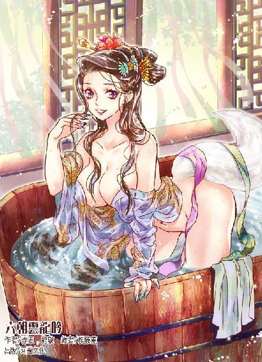

第54集·天子之气
汉国篇（6/28）
出版日期：2014-08-21
【本集内容简介】
程宗扬发现汉宫不知埋没了多少人才：穷汉班超、不得志的东方朔，还有一个疑似神经病兼科学狂的太后心腹蔡常侍！与东方朔一顿狂饮，程宗扬却在襄城君的侍女面前露出马脚。
程宗扬跟卢景遍寻不着的疤面少年及老仆踪迹终于露出一丝线索，假如显露出来的表象为非，这对主仆是女人吗，她们的身份是……
弄清楚吕氏一族的企图后，程宗扬又遇上黑魔海的汉国主事者率人拦路，双方大打出手！
※ ※ ※ ※ ※

封面人物：孙寿
夜色尚浓，程宗扬便爬了起来，先梳头洗脸，然后穿上崭新的官服。他理好衣襟，拉了拉又宽又长、几乎垂到脚面的衣袖，对着铜镜扶好进贤冠，左右看了一番，还是觉得有点别扭。
程宗扬担任的常侍郎五日一朝，今天是入朝的日子。昨日徐璜专门派人过来交待过觐见的礼仪，在宫中要留意各种的事项：少说多听，少做多看。总之作为刚入选的文散官，他只用和宫里一批随侍的亲贵待在一起，先混个脸熟就行。
罂粟女将一支崭新的毛笔簪在他冠侧，然后跪在主人身后，将一柄错金的书刀佩在他腰带的弯钩上。程宗扬拿起一册用牛皮绳编好的竹简掂了掂，对着镜子道：“我这算是刀笔吏了吧。”
惊理娇滴滴道：“恭喜老爷。”
程宗扬心下叹了口气，自己混入朝中，只是因为汉国如今的情形扑朔迷离，又赶上天子急于用钱，因缘际会之下，才花钱买了个官。万一将来汉国的政局出现惊涛骇浪，好设法尽力自保。可罂奴和惊理明明是江湖人，却对当官比自己还热心。自己在宋国推行纸钞，数日之间百万金铢入手，她们也没有说过什么，如今自己在汉国只当了个六百石的小官，这些奴婢就显得与有荣焉，连在床上都显得比以往更谦卑几分。也不知道真是对当官另眼相看，还是故意哄自己开心的。
“卓奴没来？”
“也许是有事在忙，没有消息呢。”
卓云君自从那天没等到自己，一连两天都没有入城。自己昨天在襄城君府待得太晚，又赶上今天上朝，没有顾得上去北邙找她。想起卓美人的温驯柔婉，程宗扬心下不由升起一股暖洋洋的感觉。今天从宫里回来，无论如何也要去找卓美人儿，顺便见见合德。
程宗扬出门，敖润已经在院中等候。汉国制度，六百石的官员可以配备公车以及四名随从。程宗扬配的公车也是一辆单辕双轮的马车，笔直的车辕前端连着木轭，左右各有一匹驭马，马轭下系着拳头大的铜铃。车厢外侧用来挡泥的扶手左面涂成朱红——按照制度，二千石以上才可以两侧涂朱。车上张着黑色的布制顶盖，车内铺着茵席，看起来普普通通，并不起眼。
车上的驭手是鹏翼社的许宾，敖润、刘诏、冯源作为随从徒步跟随，最后一个却是毛延寿。
程宗扬笑道：“毛先生辛苦。”
毛延寿躬身道：“为家主效力，何言辛苦？”
程宗扬登上马车，许宾拨开车轮下的木轫，双手一抖缰绳，马匹缓缓起步。
天色尚黑，敖润和刘诏各自提着灯笼，在前带路。城中的宵禁还未解除，但看到是入朝的官员，士卒不敢怠慢，上来打开路障。
马车在南宫西侧的白虎门前停下，门前的谒者验过符传，然后笑道：“程大夫来得却早。”他压低声音，“徐常侍在宫里，吩咐小的在此等候。”
程宗扬心领神会，从袖中摸出一枚金铢递了过去。
感觉到金铢的份量，谒者先是吃了一惊，这程大夫出手太宽绰了！随即一张脸笑得跟菊花一样，灿烂无比。谒者跑前跑后，先指点了车马停放的位置，让人带着程大夫的随从去侍庐歇息，然后亲自带着程宗扬进入宫门，一边热情地解说道：“这白虎门是西门，主征伐，天子阅兵、朝廷军令都由此出入。程大夫，这边请。”
穿过白虎门，一座巍峨的楼台出现在微亮的晨曦之中，与其他宫殿的华丽相比，沉静中带着一股峥嵘的气势。
程宗扬道：“这是什么地方？”
谒者道：“此处便是云台。”
“云台二十八将的云台？”
“正是。非有大功于世，不得留名云台。虽然云台二十八将天下知闻，但台中留名的功臣名宿，实不止二十八人。”
程宗扬一边走，一边仰头看着雄伟的云台，感叹道：“果然不凡。”
谒者吹捧道：“程大夫年纪轻轻便身登高位，少不了立下一番功业，他日名列云台也不在话下。”
“说的好！借你吉言。”程宗扬笑着又抛出一枚金铢。
谒者连忙双手接过，态度愈发殷勤。
“大夫，这边请。”
谒者领着他绕过云台，向北穿过一条砖石铺成的御道，眼前是一座四四方方的建筑。六朝建筑多为砖木结构，以木为主，这一座却是用岩石砌成，通体不见任何木料。一个年轻人匆匆从阁中出来，见到程宗扬的服色，立刻退到一旁，双手长揖一礼。
谒者板起脸，“怎么回事？这会儿怎么还在宫里？”
那年轻人道：“在下抄写书简，不意误了时辰。”
“误了时辰？”谒者嗤笑道：“是为了省几个油钱吧？”
年轻人揖手低头，默然不语。
谒者挥了挥衣袖，“快滚！”
年轻人揖了一礼，匆忙离开。
谒者朝着他的背影啐了一口，鄙夷地说道：“穷酸！连油灯钱都掏不起！就知道占宫里的便宜！”
程宗扬随口道：“这人是干什么的？”
谒者陪起笑脸，“大夫头一次入宫，所以不知道。前面的兰台是宫里用来藏书的馆阁，时常有些书册需要抄写。方才那穷酸穷得要死，托了他哥哥的门路，在宫里找了个抄书的差事。他想多挣些钱，又舍不得在家里点灯，连夜间都待在兰台。若非他哥哥是太史令，我早就赶他出去了。”
“太史令？”听到这个官职，程宗扬都震惊了，“他哥是司马迁？”
太史令收入怎么样，自己没打听过，但司马迁家里肯定不宽裕。太史公替李陵说话激怒武帝，下狱论死，免死有两条路，一是交钱五十万，二是宫刑——太史公要能拿出那五十万钱，怎么也不至于选择后者了。
“不是。”
程宗扬松了口气，如果真是司马迁，这五十万自己无论如何也得替他出了。
谒者接着道：“他哥姓班，叫班固。”
“什么？你说他哥哥是班固？”程宗扬瞪大眼睛，“他是班超？”
谒者谀笑道：“大夫见闻果然广博。没错，就是那穷酸。”
程宗扬险些都想转身把他追回来。班超班定远啊，带领三十六人横行西域，一人平定五十余国，镇守数十年——这样的人才，还是在最落魄的时候被自己遇见，这简直是上天赐给自己的礼物！
不急不急，程宗扬安慰自己，反正他也跑不了。等见过天子再去找他。
“兰台都是穷鬼，令史才年俸百石，那些穷酸仗着自己是文人，还瞧不起咱们宦官和刀笔吏，”谒者一边说，一边对着那年轻人背影啐道：“活该穷死！”
好吧，自己现在知道了，儒生出身的文人和宫里的宦官、小吏出身的刀笔吏不是一伙的。也就是说，如果自己能混出名堂，够资格上史书，运气好的话，多半会被班固放入《酷吏列传》，和宁成、董宣作伴。运气差点儿，就该进《佞幸传》，与一帮该死的太监、没有好下场的幸进小人作伴了。
过了兰台，面前是一大片广场，以黑色的玄武岩铺成，规模足以容纳万人。广场之后矗立着一座楼阁，隐约透出一股肃杀之气。
谒者道：“那边是阿阁，天子阅兵的地方。朝中拜将出征，主将都要先过武库，祭蚩尤，然后率兵在阿阁拜见天子。”
这处阅兵场已经多年没有使用过，然而凛冽的杀气却仿佛渗入每一块岩石之中，远远望去就令人心生惕然，不由自主地挺直腰背。
程宗扬一边走一边张望，广场另一边是一片宫阙，与兰台遥遥相对，宫门上绘着飞舞的凤凰，鲜艳的凤羽五彩湛然，华丽无比。程宗扬正要迈步过去，却被谒者拉住衣袖，“前面去不得——那是长秋宫。”
程宗扬在考虑买什么官的时候，曾经注意过官职列表中的“大长秋”一职，觉得这官职听起来够拉风。后来才知道长秋宫是皇后的寝宫，大长秋其实就是皇后宫中的大内总管——虽然和汉国大多数宫廷官职一样，担任者不一定必须是太监，但大长秋无疑是离太监距离最近的职位之一，考虑到前贤赵鹿侯的经历，程宗扬赶紧打消了主意。
长秋宫和西宫在阿阁以北，占据了整个南宫的西北角。谒者绕过阿阁，折而东行，一边解释道：“娘娘原本应该迁往北宫，但太后喜欢清静，娘娘就留在南宫了。”
程宗扬一副了然于胸的表情说道：“天子以孝治国，自当如此。”
这个话题显然不宜多说，谒者只赔笑两声，然后领着程宗扬穿过一道宫门，径直来到东面一处宫殿前，“这是玉堂前殿，徐常侍就在殿中等候。程大夫，请进。”
殿前的广场上不时传来少年的喧哗嘻笑，夹杂着弓弦震动的声音。那些是宫中的常侍武骑：期门。以“期于门下，随时待命”而得名。由善于骑射的贵戚子弟以及六郡良家子充任，是天子的亲随。
宫殿的台阶是赤红的丹墀，墀上立着几名执戟的守卫，虽然有谒者领路，为首的中郎将仍然仔细验过程宗扬的符传，一边示意他解下佩剑。
程宗扬扫了一眼，殿下的木架上已经放了数十把形制各异的兵刃。汉国官员无论文武都习惯随身佩带刀剑，只有拜见天子时才会取下。他解下佩剑，交给殿前执戟的守卫，然后把符传收入袖中，摸了摸那条丝帕，迈步进入殿内。
见识过汉宫的布局之后，程宗扬对汉国宫阙的宏伟和庞大有了另一番认知。比如南宫，不仅是天子起居之地，而且也附带了一部分官署和其他功能性建筑。云台可以视为纪念堂，兰台是国立图书馆，还有阿阁这样的阅兵场。
因此能够出入宫廷，在宫中任职的不仅有太监，还有大量的普通官员，甚至像班超这样的抄书吏也能私留宫中。而汉宫北部的玉堂、宣德、建德诸殿作为天子寝宫，以及后妃所住的长秋宫、西宫，才是传统意义上的内宫，外臣无诏不得进入。虽然略显混乱，但与后世相比，汉国的风格无疑更加质朴。
玉堂前殿是进入寝宫的门户，天还未亮，诸位中常侍、侍中、中郎将……等等有着加官职衔的内朝官员们，都已经陆续来到殿中等候。天子尚在寝中，官员们三五成群聚在一起低声交谈。他们有的头戴高冠，神态肃然，举止行礼一丝不苟，一看便是儒生出身的博士；有的戴着弁冠，身材健硕，孔武有力，流露出纠纠武夫的气概，是内朝的武官；有的和程宗扬一样，头戴进贤冠，腰佩书刀，是以刀笔知名的官吏。人数最多的，则是勋贵子弟，这些人虽然年轻，但多有爵位在身，封侯者也不乏其人。
汉国官员无论官职高低，官服多为黑色，只凭头冠和印绶区分。殿内官员所佩印绶大多是二千石以上的银印青绶，位居九卿之上的金印紫绶也颇有几位，被人尊称为金紫重臣。像程宗扬一样千石以下的铜印黑绶，着实寥寥无几。毕竟与这些真正执掌汉国权力的内朝官相比，六百石的大行令比芝麻也大不了多少。因此程宗扬入殿时，几乎没有引起任何人的注意。偶尔有人目光扫来，也不以为意地移开。
但有人一直在注意着殿门，程宗扬刚一入殿，徐璜便哈哈一笑，过来挽住程宗扬的手，亲热地说道：“程大夫来得却早。”
他衣冠整齐，头戴一顶惠文冠，冠上正中佩着蝉形的金珰，右侧垂着一条乌亮的貂尾，正是中常侍的貂珰冠饰。程宗扬心下暗暗衡量了一下，秦翰虽然被尊称为大貂珰，但好像还没有穿戴过如此正宗的貂珰冠饰。
徐璜已经等候多时，寒暄几句便领着程宗扬来到自己所在的圈子。程宗扬发现这一次自己吸引的目光明显多了许多，有的漠然，有的好奇，有的鄙夷，有的诧异，有的目光深沉，不知在想着什么。
程宗扬暗自纳闷，等徐璜停住脚步才明白过来。徐璜所在的圈子人数不多，加上徐璜也不过四人，但在殿中都有席位，而且和徐璜戴着同样的貂蝉冠，同样的金珰右貂，同样是颌下光溜溜没有一根胡须——这是阉党啊。
殿内不同官员的圈子虽然不是泾渭分明，但也能看出一些端倪。信奉儒家，以经学出身的文士；作为职业官僚，禀承法家理念的书吏；弓马娴熟，累世从军的将门子弟；出身显赫，地位超然的勋贵少年——还有就是太监。
从殿内诸人的态度来看，此时的中常侍显然还没有后世只手遮天、翻云覆雨的能力，程宗扬原本只是打算当一个旁观者，没想到徐璜会直接把自己引到太监的圈子里。自己如果被打上阉党的标签，有没有好处很难说，但肯定不是一件光彩事。
不等程宗扬开口，徐璜已经领着他到了为首那人面前，笑着说道：“这位是蔡常侍。”
程宗扬收敛心神，拱手行礼道：“蔡常侍。”
蔡常侍凭几而坐，正拿着一页信笺低头细看，全副心神似乎都沉浸其中，闻言只随意点了点头。程宗扬低头时瞥了一眼，并不是想偷看信笺上的内容，毕竟相隔甚远，一瞥之下也看不到什么东西，然而入目的情形让他大吃一惊——那位蔡常侍专注看着的信笺雪白一片，上面一个字都没有。
程宗扬感觉像见鬼了一样，这死太监盯着一张白纸看这么认真，莫非是练什么玄功？还是与徐璜不合，故意摆架子，给自己一个下马威？
徐璜却见怪不怪，只微微一笑，也不打扰沉浸在白纸间的蔡常侍，径自领着程宗扬去见第二位，“这位是单常侍。”
程宗扬依礼拱手，“见过单常侍。”
那位单常侍身材魁伟，一手凭几，手掌筋骨毕露，犹如武夫，此时正闭目养神，闻言也只点了点头，眼睛都没睁开。
程宗扬面上笑容不改，心里不禁嘀咕，自己在北宫也见过汉国的太监，那些内侍对着吕冀狂拍马屁，一点都不含蓄，怎么南宫这两位中常侍作派如此古怪？自己的六百石不会是买亏了吧？早知道就该出点血，买个两千石得了。
徐璜走到最后一位中常侍面前，不等他开口，那人便长身而起，笑道：“昨日便听徐常侍说过，今日一见，程大夫果然是年轻有为。”
徐璜笑眯眯道：“这位唐常侍可是天子心腹。”
程宗扬拱手道：“在下初入宫禁，失礼之处还请唐常侍多多指正。”
唐衡笑道：“好说，好说。”
双方寒暄几句，那位唐常侍脾气倒是随和得很，寥寥数语便令人如沐春风，顿生好感。唐衡似乎对程宗扬大为满意，频频点头，徐璜便道：“那几位呢？”
唐衡扭头示意了一下。
殿内一角，几位官员正站立闲谈。徐璜领着程宗扬过去，躬身道：“老奴见过几位御史。”
几人停止交谈，态度客气而冷漠地拱手道：“徐常侍。”接着目光落在程宗扬腰间的书刀上，不由停顿了一下。
“这位程大夫乃舞都宁太守所荐。”徐璜面带笑容地说道：“说来也是各位的后辈。”
几人交换了一下眼色，最后有人道：“既然是宁成所荐……”
另一人面无表情地说道：“一殿为臣，同为天子效力，何分彼此？”
徐璜似乎对他颇为畏惧，一张脸几乎笑出花来，赶紧赔笑道：“赵御史说的不错，就是这个道理。”
看到面前的情形，程宗扬心下雪亮，自己能从西邸买到官爵，甚至得到这位太监首领的青睐，还真不是钱的事，而是因为宁成的那封荐书。面前这些人以御史为主，八成和宁成有相似的背景。徐璜特意带着自己过来拜会，隐瞒了自己拿出一千四百万钱买官的事实，而说成是宁成所荐，无非是在这些向执掌朝廷律法的职业官僚们示好。
无论怎么说，酷吏总比阉党强些，能和这些精通律例的刀笔吏结交，程宗扬更是求之不得，当即上前施礼，说道：“在下追随宁太守时日虽然不长，但久闻诸位大名。只是官卑职小，未曾拜会诸位，聆听教诲，深以为憾。”
为首一名官员审视着程宗扬，良久淡淡道：“书刀虽小，寸铁亦可杀人。程令不必妄自菲薄，更不可不慎。”
程宗扬心头微凛，恭敬地说道：“是。”
众人初次见面，程宗扬又是由太监引见，诸人并未深谈，只是见个面认识一下，便即告辞。徐璜却大感满意，连脚步都轻快了几分。他辞别众人，领着程宗扬出了大殿，在廊下一边漫步，一边低声道：“宁太守在舞都大肆诛戮，虽是为天子分忧，但朝中颇有些人不满。天子的意思呢，想召宁太守回朝。”
程宗扬明白，徐璜这番话是送个人情给宁成，也是送给自己。天子虽然已经秉政，但想真正执掌权力，单靠一帮太监是做不到的。儒生出身的官员还能倚仗名声和师友，刀笔吏所能倚仗的只有天子的信任，只要天子帝位稳固，他们就是最忠诚可靠的属下。问题是天子的帝位究竟有多稳？毕竟在他之上，还有一位掌权近二十年的太后。汉国以孝治国，无论是名义还是实际上，太后以及其家族的权力都大得惊人。
徐璜低声道：“单常侍和唐常侍是自己人，以后不妨多多亲近。”
这话分明是说蔡常侍不是自己人，程宗扬索性问明白，“蔡常侍呢？”
徐璜声音微不可闻，“蔡常侍原在北宫。”
程宗扬明白过来，那位蔡常侍是太后安排在天子身边的眼线。可他为什么要盯着一张白纸看呢？难道是暗示大家他只是奉命而来，其实什么都不管吗？
程宗扬越想越觉得古怪，正要开口询问，忽然一行人从正前方的嘉德殿后络绎而来。当先一人穿着中常侍的冠服，冠上佩戴的却是银珰，貂尾垂在左侧，尤其颌下一丛长须一直垂到胸口，在群臣之中显得卓尔不群。
徐璜在程宗扬手上一按，然后松开手，快步走下阶陛，迎向前去，恭谨地长揖为礼，说道：“奴才见过吕常侍。”
吕常侍道：“天子何在？”
“天子尚在寝中。”
吕常侍皱起眉头，“天子五日一朝，岂能高卧而误政事？去催！”
徐璜虽然是金珰右貂，但在这位银珰左貂的中常侍面前却如同奴仆，低头应了一声，急忙往天子的寝宫宣德殿赶去。
吕常侍目光扫来，程宗扬上前一步，揖手说道：“大行令程宗扬，见过吕常侍。”
“大行令？”吕常侍道：“你来这里做什么？可是诸侯有事？”
“在下名列常侍郎，奉诏随侍天子左右。”
吕常侍看了他一眼，略微点了下头算是还礼，然后昂然往玉堂前殿行去。几位金珰右貂的中常侍依次上来行礼，那位吕常侍坦然受之，丝毫不觉得有什么不妥。
陆续有几名官员过来与吕常侍一一见礼。趁着殿中众人寒暄，中常侍唐衡踱着步子过来，柔声道：“吕闳为人方正，性情严谨，是太后指定的天子辅臣。”
程宗扬微笑道：“吕家如此多栋梁之臣，天子和太后想必都很欣慰。”
唐衡微微一笑，“理所当然。”
殿后传来脚步声，接着一个尖细的声音道：“天子启驾！”
殿内众臣立刻整理衣冠，以中常侍吕闳为首，按照品秩鱼贯而出，来到玉堂前殿之后，玉堂殿西侧的丹墀前，恭迎御驾。
程宗扬悄悄抬起视线，只见玉堂殿之后便是天子所居的崇德殿，殿前立着一匹金光闪闪的铜马，高及三丈，几乎与宫殿的飞檐平齐。铜马之前，一行车驾缓缓启行。
比起自己见过的贵族车马，天子车驾更加富丽堂皇，虽然只是在宫中出行，随行的侍卫便不下千人。队中旗旌如云，最高的天子的御旗足有六丈三尺，装在一辆大车上，旗上绘着日月升龙的图案，下方十二条火红的长旒一直垂到地面。
由于不用出宫，因此没有动用出巡的大驾，但队伍中的车舆仍有数十辆，其中有只能站立的立车，可以安坐的安车，按照五行五色，各自分为青、赤、黄、白、黑五种，称为五时车。连拉车的驭马也对应车驾的颜色，丝毫不乱。
车驾中所有的车轮尽数涂为朱红，车舆上绘制着金龙，座上是用兽皮切成细丝，然后编织成的席子，车厢周围悬着十二只金黄色的丝绸编织成的圆球。手扶的车轼上绘着猛虎，马轭雕着龙首，衡木上雕着鸾雀，车盖用翠绿的鸟羽编成，上面镶嵌着金制的花饰，每一个细节都如同艺术品般精美。
队伍中每一面旗帜都有着严格的标准，除天子御旗以外，还有象征诸侯的龙旗，对应东方苍龙七宿的大火，旗高四丈九尺。象征州郡的鸟旗，对应南方朱雀七宿的鹑火，旗高三丈五尺。象征军旅的熊虎之旗，对应西方白虎七宿的参伐星宿，旗高三丈五尺。还有象征县鄙的龟旗，对应北方玄武七宿的营室，旗帜高度最矮，也有二丈八尺。
最华丽的两辆车驾，一为金根，一为玉辂，都是天子御驾，前者以金为饰，后者以玉为饰，两车各驾六马，马匹通体雪白，只有马尾被染成红色。更让程宗扬惊奇的是，连马匹都戴着金制的高冠，冠上插着长长的鸟尾。据说车驾每一处细节都有其喻义，方形的车厢象征大地，圆形的车盖象征上天，左右车轮象征日月，车盖的二十八根盖弓对应二十八宿。车上所绘的云气星辰，更是精细绝伦。
御驾越行越近，遮天敝日的旗帜仿佛带着无上的威严，将众人笼罩在阴影之下。程宗扬学着旁边众人的动作，长揖为礼，深深低下头去。
忽然旁边响起一串急切的脚步声，一个男子道：“你不是说来不及了吗？那车慢吞吞的，坐到什么时候？”
程宗扬偷眼看去，只见一个年轻男子快步行来，他冠下戴着帻巾，唇角留的胡须漆黑如墨，身上穿着一身黑色的玄衣，宽大的衣袖垂到脚边，里面却是紧身的箭袖，步伐矫健而又敏捷。
徐璜侧着身，一路小跑跟在旁边，央求道：“陛下，便是乘车也耽误不了多久。虽然不远，可这么走过去，有失天子礼仪，万一被官员看到……”
“他们还能弹劾朕吗？”
徐璜苦着脸道：“谁敢弹劾天子？可奴才免不了要受责罚。”
年轻男子拍了拍他的肩膀，“放心吧，朕给你作主……”
话音未落，那位年轻的天子忽然停住脚步，身子向后倾去，看了看最前面那名中常侍的相貌，然后赶紧直起腰，若无其事地打了个哈哈，“吕常侍，今天是你当值啊。”
吕闳一丝不苟地行完礼，然后抬起身，两眼望着天子的脚尖，沉声道：“今日朝会，陛下当乘卤簿法驾面见群臣。徒步出宫，乃近侍失职。中常侍徐璜难辞其咎，请天子下诏责罚。”
天子笑道：“算了吧，这是朕自己的主意，不关他的事。”
“君有过则谏……”吕闳似乎意识到自己失言，停顿了一下，然后道：“不谏者，小人也。”
徐璜扑通跪下，“奴才死罪！”
天子笑容僵在脸上，双眼盯着吕闳的貂蝉冠，额角青筋缓缓鼓起。
忽然旁边一名身材颀长的男子侧身上前，执戟道：“尧舜股无胈，胫无毛，以养天下，岂闻天子徒步为过？”
吕闳看了那人一眼，见他只是殿外一名执戟，不由皱眉，开口道：“周公制礼，乃服天下。”
执戟男子道：“周公可曾责备尧舜？”
眼看两人要争执起来，那名刚才告诫程宗扬“书刀寸铁亦可杀人”的官员喝道：“仔细君前失仪！”
被御史中丞喝止，吕闳只好住口，伏身谢罪。
天子盯着他，片刻后恢复平静，淡淡道：“吕常侍谏得好。赏！”说罢头也不回地往前走去。
一众内朝官员匆忙跟上去，吕闳低着头，半晌才长长叹了口气，勉强撑起身体，步履沉重地跟在后面。
一眨眼工夫，旁边的内侍都走得干干净净，那名执戟也回到殿下。程宗扬弯腰扶起徐璜，低声道：“吕常侍说什么了，天子那么生气？”
“君有过则谏，只是半句。后面还有半句——”徐璜低声道：“反复谏之而不听，则易位。”
※ ※ ※ ※ ※
“程头儿，你怎么出来了？”
“有活要干。”程宗扬抬起手，拿着一卷诏书在指间一转，“去传旨。”
程宗扬头一次参加朝会，原准备进崇德殿好好开开眼界，结果脱了鞋子，跟鸭子一样小跑着入殿，刚站稳还没看清怎么回事，朝会第一件事就干净利落地办完了——定陶王前些日子死了，朝廷拟定谥号，确认了继位的人选，派人前去通传。
大行令干的就是与诸侯来往的礼仪差事，程宗扬躲都没处躲，于是刚进殿就奉诏领旨被打发出来了。
来日方长，程宗扬也没有什么好遗憾的，边走边道：“这地方怎么样？”
敖润啧啧赞叹道：“真大。”
“哪里大了？”
“什么都大！瞧这水缸，”敖润拍了拍旁边半人多高的大缸，“怎么烧出来的？”
冯源道：“不光这些。我听说宫里有种荷花，叫夜舒荷，是从南荒移来的，开的花比车盖都大，有一丈多高。”
刘诏道：“吹牛吧？哪儿有那么大的花？”
程宗扬笑道：“恐怕是真的。”说着转头对毛延寿道：“毛先生，如何？”
毛延寿谨慎地说道：“小的在宫中所见不远，西南这一带大致能画下来。”
“改天咱们换个门进。”程宗扬道：“我不需要你画得多好，但细节一定要准确。”
“小的明白。”
※ ※ ※ ※ ※
程宗扬先去了鸿胪寺，将传诏之事记档，然后找了两个懂行的属下随行，一同赶往定陶王邸。
王邸是诸侯觐见天子时的住处，如今定陶王驾崩，唯一的儿子在封地守孝，王邸内只有几名封国的官吏。见到大行令亲自前来传诏，众人不敢怠慢，依照礼数接待了朝廷的使节。
汉国开国至今，死的诸侯王没有一百也有八十，朝廷吊丧的礼法规矩都是现成的。程宗扬作为朝廷使节宣读诏书，先表达了天子的哀悼之情，然后给已故的定陶王加封了谥号，最后宣布了王位的继承人——定陶王就一个儿子，想争都没处争去。
宣读完之后，程宗扬将诏书收起，交给随行的治礼郎。诸侯崩殂，新王继位是朝廷大事，按例当由朝廷派官员前去吊丧，宣读天子的旨意。如今诸侯王都在洛都设有王邸，专门等候天子的旨意，于是规矩也稍有变通，由大行令先赴王邸宣诏，再派人启程前往封国，两名治礼郎负责保管诏书。当然，朝廷吊丧的正使可不是他们——别说他们只是百石的小吏，就是大行令也不够格，定陶王身为诸侯，起码要二千石才能当正使。
至于吊丧的正使是谁，就不在程宗扬的考虑范围之内了。把诏书交给两名治礼郎，他这大行令的头一桩差事就算是顺顺利利地完成了。
办完差事，程宗扬又以私人身份吊祭了一番，奉上礼金万钱。这并非规矩，而是程宗扬自作主张，他倒没有别的心思，只是遇到这种事，结个善缘而已。
但程宗扬此举让定陶王邸的官吏受宠若惊，汉国封了几十位诸侯王，虽然不禁止官员结交诸侯，但朝廷官员除非私交甚笃，极少会来吊祭一位不相识的诸侯。邸中已经派人打听过，这位新任的大行令官职虽然不高，却有着常侍郎的身份，算得上天子近臣，于是刻意奉迎，希望能在朝中得一力助。
一场丧事，却因为双方各怀心思，最后尽欢而散。等程宗扬回到宫中缴旨，朝会已经结束。好在朝会的内容从来都不是秘密，很快程宗扬就得知，朝会中天子应重病在身的霍大司马之请，解除了霍子孟大司马的职权，却保留了大将军。
接着天子给了吕冀一系列荣宠之极的加封：入朝不趋，谒赞不名，剑履上殿，食邑四县。除此之外，赏赐的金钱、奴婢、彩帛、车马、衣服、甲第……一律比照霍子孟当年，赏赐之重历代少有。唯一没有给的，就是大司马一职。
“大司马之位非襄邑侯莫属。”徐璜面带笑容地说道：“不过是早晚之事而已。”
程宗扬知道他是说给旁边那位蔡常侍听的，但蔡常侍盯着那封无字的信笺，神情没有半点异样。良久，蔡常侍放下信笺，走到殿门处，望着外面的宫阙，然后开口唤来一名小黄门，“备车。”
小黄门恭恭敬敬前去准备车马，蔡常侍拂了拂衣袖，向众人揖手行礼，淡淡道：“告辞。”
徐璜与唐衡起身相送，“蔡常侍慢走。”
蔡常侍微微点头，然后离开玉堂前殿。
蔡常侍身影消失片刻，形如武夫的单超长身而起，一步跨出殿门。
唐衡摇头叹道：“何必如此？”
徐璜道：“放心些好。”
他们的交谈没有回避程宗扬，显然把这个走自己门路买到官位的年轻人当作自己人，程宗扬却有种芒刺在背的感觉。自己虽然有心参与棋局，但只想在幕后执棋，可眼下却似乎成了被别人操纵的棋子。
这种感觉很不好，程宗扬权衡片刻，决定自己行棋，他挪了挪身体，忽然间“咦”的一声，面露诧异，接着掀开席角，从席下抽出一条丝帕，故作好奇地看了半晌，问道：“这帕子是哪里来的？”
徐璜接过丝帕，看到下面绣的“玉堂前殿”四字，笑道：“多半是哪个宫女不小心忘在殿内的。”
“原来如此。”程宗扬道：“这殿里也有宫女吗？怎么没看到呢？”
“当然有。今日朝会，宫娥自然回避了。”徐璜一边说，一边随手把丝帕放在案上。
忽然旁边一只手伸来拿起丝帕，却是唐衡。他原本面带微笑，神态从容，此时眼角却狠狠跳了几下。
徐璜原本未曾留心，看到他的异样才意识到不妥，“这是……”
唐衡道：“传尚衣！”
不多时，掌管宫中衣物的尚衣来到殿内。唐衡问道：“各郡前次进贡巾帕是在何时？”
“上月初，合浦郡曾入贡一批巾帕。”
“有无鲛帕？”
“有。”尚衣回道：“鲛帕一向由合浦郡入贡，本次一共十六条。天子分赐后宫七条，库中尚余九条。”
“这一条是哪里的？”
尚衣接过那条丝帕审视片刻，然后对着阳光仔细看了绣字所用的丝线，良久才小心翼翼地回道：“此帕正是合浦郡入贡的鲛帕，所用丝线当出自长秋宫。”
“为何是玉堂前殿字样？”
“回唐常侍，奴才不知。”
唐衡沉默片刻，“下去吧。”
程宗扬在旁越听越是惊心，长秋宫是皇后的寝宫，出自长秋宫的鲛帕却落到一个游女手中……难道当日在上汤的，竟然有长秋宫的人？他觉得这事自己都不敢想了，吕冀真要有那么大本事，干脆自己当皇帝得了，至于为一个大司马争来争去吗？
唐衡叫来小黄门，让他们查清今日进入玉堂前殿的内朝官员，有谁曾在那处席位坐过。至于事情原委，则绝口不提。
徐璜与唐衡交换了一个眼色，然后对程宗扬道：“此事已经查明，巾帕是宫女无意间遗在席下。宫中之事，不宜对外宣扬。你自己知道便是。”
程宗扬一脸恍然地说道：“在下明白。”
众人各怀心事，交谈几句便各自散去。徐璜前往西邸，唐衡收好鲛帕，入内随侍天子。程宗扬留在玉堂前殿等候天子召见。可一直等到午后，宫里也没有传来消息。
程宗扬耐着性子，打量着这座玉堂前殿。和汉宫其他建筑一样，这座玉堂前殿也极其宏伟，成排的立柱通体涂朱，上面雕刻着金色的蟠龙。忽然他目光一闪，看到屏风后多了一个影子。
那屏风是用极细的绢纱织成，上面绣着一个手捧仙桃的仙女。隔着绢纱，能看到那个影子落在仙女脚边，身高不足三尺，似乎是个七八岁的童子。
童子摇摇晃晃走到屏风后，歪着头看了一会儿，然后踮起脚尖，竭力伸长手臂，想去摸仙女手里捧的仙桃。可惜他个子太矮，再怎么用力也够不到。
程宗扬本来心里有事，但看着屏风后面那童子天真烂漫的模样，禁不住笑了一声。
听到笑声，童子停下手，接着那个矮小的影子慢慢挪到屏风边缘，小心伸头往殿内张望。
天子至今尚无子嗣，这小家伙显然不会是皇子。只不知道是谁家的孩子，一个人在宫里乱跑，身边连个服侍的人都没有。程宗扬露出一副亲切的笑容，紧接着，他的笑容僵在脸上，背后的汗毛几乎竖了起来。
那童子从屏风边缘露出来的面孔，赫然是一张皱巴巴的马脸，扭曲的五官看不出有多大年纪。他眉毛画成两个红色的墨团，鼻子又圆又大，下巴奇宽，肥厚的嘴唇间露出两颗八字形的门牙，头发扎了一个童子式的丫角，身上穿着五色的彩衣，手臂和双腿短小无比，那模样活脱脱就是个怪物。
程宗扬惊出一身冷汗，一手闪电般伸入怀中，却摸了个空，这才想起自己把匕首留在家里。传说深宫古殿易出精魅，没想到今日让自己撞上了。他展臂抓住面前的长几，暗道这妖怪要敢过来，自己就跟他拼了。
那怪物开口道：“你是谁？”
程宗扬喝道：“你是谁！”
怪物道：“你为什么在这里？”
程宗扬道：“你为什么在这里！”
怪物拍手笑道：“真好玩！”
程宗扬道：“有什么好玩的？”
怪物应声道：“有什么好玩的？”
程宗扬一怔，才发现他在学自己说话，连口气都模仿得维妙维肖。
“你是什么怪物？”
“你是什么怪物？”
“我是宫里的常侍郎！”
“我是宫里的常侍郎！”
“我在对一个三尺高的怪物说话。”
“我在对一个七尺高的怪物说话。”
程宗扬深深吸了口气，然后开口道：“正宗好侏儒正宗小怪物还是熟悉的面孔还是古怪的声音正宗小怪物天然不刺激本届汉宫侏儒大赛由小怪物集团特约播出我们面前的小侏儒即将踏上神奇的怪物之旅欢迎投票支持参与节目互动赢取小怪物集团提供的丰厚礼品！”
殿内安静下来，面前的小怪物张口结舌，半晌才道：“你娘！”
程宗扬已经认出这小怪物其实是一个先天发育不全的侏儒，作为宫中蓄养的俳优弄臣，供天子取乐。见他发怒，程宗扬只觉得好笑，笑吟吟道：“怎么不学了？”
那侏儒拍着几案，头上的丫角一晃一晃，怒道：“你会不会玩啊？”
“玩什么？”
“我这么矮，肠子也短，一口气能说那么多话吗？”
程宗扬笑道：“等你学会再说吧。”
侏儒赶紧道：“等你学会再说吧。”
程宗扬索性闭嘴，侏儒还不罢休，气鼓鼓地缠住他，一个劲儿道：“再来！再来！再来！”
那侏儒倒也不见得有什么恶意，但像块牛皮糖一样吵闹不已，让程宗扬也不禁头大。
纠缠间，殿外那名身材颀长的男子执戟进来，先惊奇地“咦”了一声，然后对那侏儒道：“你怎么还在这里？”
侏儒仰脸看着他，黑豆一样的眼睛眨巴几下，“怎么了？”
“你还不知道吧？”执戟男子神情严肃地对那侏儒说道：“天子刚才说了，如今宫中用度吃紧，你们这些侏儒耕田比不上农夫，让你们当官又不会治民，从军又不懂兵事，一点用处都没有，与其白白浪费衣服粮食，不如把你们这些侏儒全都杀光！”
那侏儒见他说得认真，吓得张大嘴巴，然后放声大哭。
“蠢货！”男子训斥道：“你对我哭有什么用？还不赶快去找天子请罪！”
侏儒哭哭啼啼往宫里跑去，只不过他腿太短，跑着还没有常人走路快。
程宗扬松了口气，对这个替自己解围的男子颇有好感，笑道：“敝姓程，忝居大行令一职，敢问先生贵姓？”
男子抱着戟靠在柱子上，懒洋洋道：“复姓东方，东方曼倩。”
程宗扬眼睛亮了起来。先遇到班超，又遇到这位名垂后世的执戟郎，刚入宫半日，就给了自己两个惊喜，看来汉宫被埋没的人才还真不少。
“原来是东方先生，久闻大名！”
东方曼倩不以为然地说道：“不过是殿外执戟的无名小卒，何来大名？我看你方才应付那矮子的手段，也非是满腹膏腴的庸人，你我今日萍水相逢，明日相忘于江湖，何必大言相欺？”
“先生诙谐多智，声名在外，我可是久仰得很了。”
“久仰什么？”
程宗扬笑道：“世间英雄辈出，以先生之能，堪称滑稽之雄。”
“滑稽之雄？”东方曼倩大笑道：“不意今日遇一知己！”
说话间，一名小黄门奔进来，对东方曼倩尖声道：“又是你这个狂人！方才是你吓唬的孟舍人？”
东方曼倩精神一振，“可是天子召见于我？”
小黄门没好气地说道：“作梦去吧！外面送来新酿的贡酒，天子正在尝新。若不是我拦着，让姓孟的侏儒闯进去，打扰了天子的兴致，少不了治你的罪！行了，你们先回去吧。今日天子不会再召见你们了。”
程宗扬取了佩剑，东方曼倩将所执的朱柄银戟交还殿外的虎贲中郎将，两人并肩离开玉堂前殿。
不知何时，天际已经浓云四合，望着阴霾下的重重殿宇，东方曼倩长吁了一口气，然后道：“程兄是刚刚入侍吧？”
程宗扬道：“今天是头一天。本来还等着天子召见，担心君前失仪。结果只在殿前远远看了一眼。”
“不错了，初次进宫便能见到天子。”东方曼倩道：“我以文字自荐，被天子特诏入宫，原本以为能攀龙附凤，快意此生，谁知入宫多时，只在殿前执戟而已，十有九次只能看见天子的背影。”
程宗扬笑道：“晨间反驳吕常侍那位是你吧？在众臣面前引经据典，侃侃而言，东方兄胆子真不小。以一个执戟郎的身份当众驳斥吕常侍，替天子解围，不是一般的有胆有识。”
东方曼倩叹息道：“晨间之事却是我错了。”
“哦？”
东方曼倩坦然道：“程兄是明眼人，自然知道我敢以小搏大，无非是投天子之好。若是天子有心，早该遣人前来询问我的姓名出身。于今不闻不问，可知天子对吕常侍那番话深忌在心，连带的连我也不愿理会。若非如此，我何必去借一个侏儒弄臣的口舌，冀图面见天子？”
程宗扬怔了半晌，东方曼倩敢在众臣面前驳斥吕闳，换作别的君主，至少也要私下略作抚慰，谁知天子竟然会对他不加理睬，实在出乎自己的意料。这位天子对待强项令董宣的宽厚，颇似有为的明主，私下在西邸卖官鬻爵，又有几分行大事者不择手段的枭雄之色，却因为吕闳触了他的逆鳞，连带替他解围的东方曼倩都不愿理睬，显露出外宽内嫉的本色来。
遇到这种君主，东方曼倩真是够倒霉的。程宗扬本来想安慰几句，话到嘴边又咽了回去，“这么说来，东方兄刚才是故意吓唬那个姓孟的侏儒了？”
“如此行事，倒让程兄见笑了。”东方曼倩自嘲地说道：“我东方曼倩满腹才学，难近天颜，那些倡优之辈，却能时时面见天子。姓孟的身高不及三尺，每月俸禄粟一囊，钱二百四十，我东方曼倩身高七尺，每月俸禄也是粟一囊，钱二百四。这点俸禄侏儒能撑死，我得饿死。”
两人出阿阁，过兰台，一路往白虎门行去，东方曼倩边走边谈，旁若无人地说道：“我已经想好了，一旦天子召见，我就这么说：天子若觉得我可用，就给我个像样的职事，免得我空度时日，蹉跎岁月；若不可用，我就回家，不再浪费洛都的粟米。”
程宗扬道：“东方兄要辞官？”
东方曼倩狡黠而又无奈地笑了一下，“当着天子的面自然要这么说。”
程宗扬道：“不当着天子的面呢？”
“那我跟你说实话。”东方曼倩道：“假若我这番言辞仍无法打动天子，我就——做一个弄臣。”
程宗扬怔了片刻，然后两人同时放声大笑。两人此时正在兰台之前，作为宫中最具规模的藏书阁，来往兰台的都是饱学的鸿儒，见东方曼倩笑得肆无忌惮，不禁频频皱眉，抖着胡子远远斥道：“又是这个狂人！”
东方曼倩对那些文士视若无睹，一番狂笑，几乎笑出泪来，他扶着程宗扬的肩膀，喘着气道：“你说，我若是做弄臣，岂不比那些侏儒强上百倍！”
“东方兄即便做弄臣，也少不了青史留名。”程宗扬道：“这些儒生将来在兰台抄书，还要抄写东方兄的传记。”
东方曼倩大笑道：“正是！正是！”
他笑声虽然狂放，眼中的泪花却暴露出他的不甘。程宗扬索性道：“咱们喝酒去！我请客！”
东方曼倩毫不推让，“走！”
两人乘车直奔小胡姬伊墨云的酒肆，要了酒食，连敖润、刘诏等人都凑到一起，同席而饮。
交谈间，程宗扬越来越发现东方曼倩是个妙人，言语诙谐，却不失正道，能言善辩，又不固执己见。对朝中公卿多有讥刺，却跟敖润、冯源等人很谈得来，颇有些出入朝堂、游戏市井的洒脱。
席间谈到俸禄，汉国的俸禄是钱粮各半，一半为粟米，一半折为钱铢。但所折的钱铢是按照固定价格，如今一石粮食价格是五枚银铢，官方折价只有二百四十铜铢。东方曼倩月俸不过两石，只有敖润的四分之一，几乎是最低一级。
这点俸禄在洛都只能勉强养家糊口，好在东方曼倩是宫中当值，不时会有赏赐——东方曼倩声称自己要当弄臣，并非仅仅只是激愤自嘲之言，汉宫俸禄普遍微薄，很大一部分收入都来自各种赏赐。作为天子近臣，赏赐尤其丰厚。
程宗扬当场替东方曼倩算了笔账，发现他的俸禄加上赏赐也不是十分菲薄，至少比班超强得多，可东方曼倩那点俸禄却远远不够花。问其缘由，东方曼倩问道：“你我年纪相近，多半已经成亲了吧？”
程宗扬笑道：“最多两月便要成亲，到时请东方兄喝杯喜酒。”
“可是续弦？”
“初婚。”
东方曼倩有些意外，汉国男子十五六岁成亲是常事，程宗扬这么晚才初婚，着实少见。不过他本是洒脱之人，也没有多问，径自道：“既然如此，我也在两月之后成亲罢了。”
“咦？东方兄也是初婚？”
“不是。”
“二婚？”
“也不是。”
程宗扬笑道：“你不会是要结第三次婚吧？”
东方曼倩道：“不瞒程兄，这是我第九次娶妻。”
程宗扬差点把酒喷出来，“你前面八个老婆都死了？”
东方曼倩大笑道：“岂是如此？我每年娶一妻，一年即尽，便出妻再娶，家中财物无论多寡，尽付于前妻，因此常患俸禄不足用。”
程宗扬奇道：“你这是什么作派？”
东方曼倩抬手指着外面的街市，“程兄且看，这洛都有多少美女？满园名花，我东方曼倩岂能只折一支？”
“你可以纳妾嘛。”
“纳妾最是恶事。”东方曼倩一手覆着酒樽，醉醺醺道：“我来问你，你有几个鸡巴？”
“废话！你难道有两个？”
“这不就是了。”东方曼倩道：“美女如名花，我既采撷新花，何必将前花锁于一室之中，使外人不得见也？”
程宗扬琢磨了一会儿，叹道：“你这才是万花丛中过，片叶不沾身。”
东方曼倩拍案道：“说的好！正是如此！程兄，我敬你一杯！”
“还是我敬你吧。像东方兄这么潇洒的人物，我还是头一次见。”程宗扬举樽道：“干了！”
两人举樽一碰，然后一饮而尽。
东方曼倩也是善饮之辈，两人喝到半醉，在席间勾肩搭背，称兄道弟，只觉相见恨晚。
要论折花，自己折的也不少，但像东方曼倩这样洒脱，程宗扬自问是万万不能。无论小紫、如瑶还是月霜、小香瓜，自己一个都舍不得放手，天荒地老都嫌不够，怎么能说弃就弃？占有欲是人类尤其是男人最基础的本能，东方曼倩连这点占有欲都没有，真不知道该说他是全无情感的非人存在，还是游戏风尘、太上忘情的出世高人。
程宗扬正喝得眼花耳热，旁边一个声音娇叱道：“程厚道，你又在喝酒！”
程宗扬回过头，只见一个俏丽的小婢双手叉腰站在身后。她不知找了多久才找到自己，此时面带愠怒，眼底却有几丝怯意。
东方曼倩笑道：“好标致的小姑娘，可惜已非处子。”
红玉俏脸一红，转身就走，又停住脚步，“你要不想死，就赶快过去！”
“等等！”
程宗扬摸出一支木简，在上面写了一行字，中间写错了两个字，又拿书刀刮掉，重新填好，一边打着酒嗝道：“我今晚不过去了。她要想见我，就到这个地址来……”
程宗扬不由分说，把木简塞到红玉手中。红玉只想把木简扔到他脸上，最后恨声道：“你去死吧！”然后逃也似的跑开。
东方曼倩笑道：“程兄尚未娶妻，这是哪里来的胭脂虎？”
“偶遇而已。”
东方曼倩执觞道：“世间名花虽多，手中一支足矣，程兄切莫看花了眼。”
程宗扬听出他话中规劝之意，笑道：“多谢指点。东方兄放心，程某自有分寸。”
东方曼倩本是洒脱之人，闻言也不放在心上，摘下头冠往角落里一扔，意气风发地喝道：“谁来与我射覆！”
“我来！”
冯源拿出一只带钩用碗扣住，让他来猜，东方曼倩张口即中。冯源不信邪，举觥饮了一杯，然后接着来。东方曼倩连射连中，无一虚发。冯源一口气连输七局，输得脸都绿了，干脆换成酒瓮，照样挡不住东方曼倩的连胜，让冯大法直后悔没有把远在临安的林清浦请来。
敖润一看不是事，挽起袖子就要跟东方曼倩划拳，刘诏拦住他，“敖哥，划拳那么粗俗的勾当就别拿出来献了，你玩投壶啊。”
敖润一脸茫然，“啥？”
刘诏恨铁不成钢地说道：“亏你还是射箭的——投壶都不知道？”
“哦！哦！”敖润想了起来，“那就投壶！老东，你敢不敢？”
东方曼倩笑骂道：“什么老东？我很老吗？那就投壶，一投一觥！”
※ ※ ※ ※ ※
“呕……”
敖润抱着车轮一阵狂吐，半晌才喘着气道：“老刘，你出的什么馊主意……老东投壶比射覆还狠……哥今天算是被你害惨了……”
刘诏脑袋顶着墙，一边“哗哗啦啦”地尿着，一边吐了口酒气，语重心长地说道：“酒量不行，说啥都是白搭。你瞧我，输是输，可咱输得起啊，不就是一连输了三十多杯吗？咱喝完精神焕发，走路都带风的。”
说着刘诏转过身，熟练地套好车马，打开卡住车轮的车轫，一手拿起赶车的鞭子，就要上车。
冯源趴在车厢里，马车一晃，醒了过来，他抬头看着刘诏，然后“嘿嘿”笑了起来。
“笑啥呢？”刘诏一脸纳闷。
旁边的毛延寿咳了一声，提醒道：“刘爷，你裤子湿了。”
刘诏低头一看，脸顿时黑得锅底一般。
敖润抱着车轮哈哈大笑，“老刘，别人是解了裤子撒尿，哪儿有你爽利？撒尿连裤子都不解，难怪走路都带着风呢。”
刘诏强辩道：“我明明解了的！”
“你是拎着裤带当那话儿了吧？”程宗扬道：“得了，你们也别回去了，和老东一起，都在酒肆歇一夜，让伊墨云给你们找铺盖。”
东方曼倩虽然酒量惊人，但好汉架不住人多，此时早已醉倒，伊墨云刚收拾停当，几名刚送走的醉汉又转了回来，一进门就倒成一堆，呼噜声响成一片。毛延寿倒是喝得不多，这会儿前后奔忙，好不容易帮着把敖润、刘诏等人扶到席上安置下来，累出一身臭汗。
程宗扬也有了七八分醉意，可这间酒肆本来就不大，一下挤进四名壮汉，连下脚的地方都没有。小胡姬伊墨云一边打着呵欠，一边苦恼地给几人腾地方、找铺盖，还要防着他们吐到自己的被褥上，还要照看外面的车马，不由得狠狠给了程宗扬几个白眼。
程宗扬也有点心虚，自己带人来喝酒也就罢了，结果还把客人留到店里。要不是自己那乖徒儿面子够大，这几个醉汉恐怕早就被人扔到大街上了。
酒肆中鼾声四起，敖润和刘诏嗓门一个比一个洪亮，那气势声震屋宇，连房顶的瓦片都震得乱摇。瞧着小胡姬一脸委屈的模样，程宗扬赶紧打了个招呼，就带着毛延寿溜了。
两人都不会驾车，只能徒步，程宗扬只好就近去金市旁边那处租住的房子，准备凑合一夜。
刚走过一个路口，程宗扬就开始后悔。下午从宫里出来，天气便阴沉沉的，随时都可能下雨。此时已经是深夜，天际浓云密布，无星无月，四周一片漆黑，伸手都看不见五指。周围的里坊都建着高墙，但此时连墙的影子都看不见。如果不打个灯笼，这样的夜里根本就是寸步难行。
程宗扬的手电筒留在了游冶台，手里连个打火机都没有，只能摸索着前行。刚走出几步，程宗扬忽然心生警兆，抬手接住一道黑影。
手中毛绒绒一片温热，接着“喵”的一声，却是一只野猫。
程宗扬松了口气，扔下那只野猫，说道：“延寿，我看得回去借个火把，要不然根本没办法走啊。”
说完却没听到毛延寿的回话，程宗扬脚步一顿，然后侧着身慢慢靠在墙边，一手握住腰间的短剑。
身后一片寂静，毛延寿仿佛凭空消失了一般，毫无声息。
程宗扬屏住呼吸，然后猛地往地上一扑。“叮”的一声，一柄弯刀劈在他刚才所立的位置，刀锋在墙上溅起几点火星。
程宗扬扳开机括，短剑悄无声息地出鞘，朝前刺出。接着剑锋一沉，刺在那人小腿上。黑暗中传来一声低叫，却是一名女子。
程宗扬猛虎般跃起身来，左手握拳挥出，打在那女子握剑的手腕上，接着往上一攀，搂住她的脖颈，扳住她的下巴往上抬起，右手举起短剑，朝她露出的咽喉刺去。
那女子喉咙被他扼住，只能勉强吐出一丝声音：“别杀我……”
剑锋落在那女子颈上，留下一道血痕，让那女子魂飞魄散。
程宗扬寒声道：“你是谁？为什么偷袭我？”
那女子艰难地说道：“我是襄城君府里的婢女……”
程宗扬酒意醒了大半，略一琢磨，便意识到自己犯了一个错——自己酒意上头，在红玉来的时候拿木简写了地址，让红玉带给襄城君。问题是六朝的识字率本来就不高，何况自己还装成傻子。襄城君接到木简，再问明是自己在席间亲手所写，再傻的人也会起疑心。与一个傻子私下偷情倒也罢了，可一个别有用心的人假扮成傻子，麻烦就大了。如果被有心人抓住把柄，免不了后患无穷。没想到襄城君这么果决，立即派人在酒肆外等候，自己一出门，就要杀人灭口，斩草除根。
程宗扬心念电转，弄清了其中的缘由，一边懊恼自己喝酒误事，一边暗叹这狐狸精真够狠辣的，前一刻还着急上火地让红玉四处寻找自己，察觉不对，立刻翻脸无情。程宗扬一问那女子来的时间，襄城君几乎没有半点迟疑，接到木简就派人来到酒肆。如果不是她低估了自己的身手，只匆忙派出一个心腹婢女，自己此时早已血溅街头，还要落一个私闯宵禁、为贼所杀的名头。
事已至此，如何善后，让程宗扬头痛不已。襄城君已经起了疑心，自己即使杀了这婢女也没有意义。襄城君不见回音，肯定会再派人来杀自己灭口。可留这婢女一条性命，襄城君立刻会知道自己不仅会写字，还有一副不错的身手，下次再派人来，就不会这么容易打发了。
襄城君是太后弟媳，吕冀的正妻，背后是太后和汉国最强大的外戚。从安全起见，最好的选择应该是立刻离开洛都。可自己好不容易从冯子都口中找到徐璜的门路，花重金买来官职，洗白身份，就这么狼狈逃窜，一大把的前期投资全打了水漂不说，还要惹一屁股的麻烦擦不干净，这也太失败了。
程宗扬找到毛延寿，发现他倒在街角，所幸只是被那女子击晕，并无大碍。既然没出人命，程宗扬也收起杀意，心一横，决定赌一把。
他收起刀，对那婢女说道：“你去告诉夫人，就说我是五原城来的。听清楚了吗？”
黑暗中看不到那婢女的表情，但能听出她的错愕，“奴婢……听清楚了。”
※ ※ ※ ※ ※
襄城君猛然坐起身，失声道：“五原城？”
婢女道：“那人是这么说的。”
襄城君目中异彩连现，翻身从榻上下来，吩咐道：“来人！备车！”
“夫人，”旁边的仆妇劝阻道：“眼下已经是半夜，夫人若是出行，只怕引起城中议论。”
襄城君冷静下来，她身为吕冀的正妻，一举一动都不知有多少人盯着，若是就这样出门，天不亮可能就传遍整个洛都。
“你说的是。”襄城君从容道：“你们出去吧。红玉，你留下。”
等周围的仆妇离开，襄城君旁边的床榻忽然一动，整面墙壁旋转过来，从刚才的大厅转到厅后隐秘的奥室。
“你去取两面腰牌，”襄城君对红玉吩咐道：“一会儿从后门走，你与我一起去。”
红玉吃了一惊，她没想到女主人这么急于出门，有些慌乱地说道：“可是夫人，只我们两个人，万一……要不要再带些人？”
襄城君眼神一厉，斥道：“闭嘴！不该问的别问！”
红玉身子一颤，隔了一会儿才小心道：“出门可要拿求医的通行书简？”
权贵之家自有夜间通行的令简，逻卒虽然不会阻挡，但襄城君连夜出府的事就无可隐瞒。除此之外，一般人家生子或是急病，不在宵禁之列，但需要里坊出具的书简以供查验。襄城君府中婢仆不下千人，求医的通行书简是必备之物，执此出门，遇到巡逻的士卒也容易解释。
襄城君点头道：“你去取吧。”
红玉匆忙取来腰牌、令简，找出两套带着兜帽的罩衣，与女主人扮成府中的仆妇，然后提了灯笼，从后门悄悄出府。
路上遇到两起巡夜的士卒，看到是两个女仆带着襄城君府的书简，说府中有人得了急病，前去求医，士卒们并没有留难，还好心地送了她们一程。
告辞了好意的士卒，两人借着灯笼微弱的光芒，来到金市南门。虽然已经牢牢记住地址，可襄城君还是拿出木简，就着灯笼又仔细看了一遍。
里坊的大门已经关上，但这处里坊的住客多是外乡人，人员混杂，里正也不甚用心。红玉上前敲了门，又塞了一串钱铢，里正便权作不知，睁只眼闭只眼地放两人入内。
素白的灯笼内烛火摇曳，映出坊中杂乱的房舍，襄城君皱起眉头，扶着小婢绕过积水的泥坑，找到木简上写的位置。红玉刚要叩门，房门已然打开，一名艳丽的女子露出面孔，看到是两名陌生的女子，只嫣然一笑，便扭头入内。既没有问她们的身份，也没有问她们的来意。
虽然只是惊鸿一瞥，但那女子惊人的艳色直让红玉看呆了眼。那女子浓妆艳抹，妆扮得如同街头倚门卖笑的娼女，眉眼间却看不出半分艳俗，衬着周围破旧的房舍，就如同一只骄傲的凤凰飞入鸡窝之中。
红玉回头看着夫人，只见襄城君的面孔被兜帽遮住，露出的红唇微微抿紧，似乎下了决心，接着举足踏入门内。红玉虽然心怯，也只好硬着头皮跟在后面。
屋内颇为狭窄，陈设倒还整洁。外间的角落里铺着一张草席，一名看着有几分寒酸的文士蜷身躺在上面，似乎已经睡熟。里间挂着一副半旧的竹帘，隔着竹帘能看到里面点着油灯，不时有氤氲的水雾从帘中飘出。
那艳姬衣饰甚是古怪，身上只有几件小到不能再小的布片，勉强掩住羞处，却极具美感，外面罩着一层透明的黑色薄纱，白美的玉体大半暴露出来，走动时香肌雪肤在薄纱下时隐时现，让人看得眼花缭乱。
艳姬回眸看了裹在罩衣中的女子一眼，浅浅一笑，抬手挑起竹帘。只见屋内摆着一只宽大的木桶，一个年轻的男子仰着脸靠在木桶中，他头上的发髻已经解开，湿漉漉的头发披散下来，旁边的木几上放着一套黑色的官服，上面摆着一顶簪着毛笔的进贤冠。看他的容貌，正是那个叫程厚道的傻瓜，只是此时他全身上下全无呆气，一双眼睛似笑非笑，眼底却隐隐闪着寒光。
襄城君慢慢走过去，像不认识一样打量着他，灯光下，那张艳如桃李的面孔充满了谨慎和戒备的神情。她张口想说什么，却见那男子抬起手，漫不经心地勾了勾手指，让她进前，然后用下巴示意了一下身边。
木桶旁放着一只剥好的丝瓜瓤，丝瓜子已经去掉，只剩下金黄细密的内瓤。襄城君怔了片刻，才意识到他是让自己给他擦背。一股怒气涌上心头，襄城君挑起眉梢，面露愠色。她双手握在胸前，对那只丝瓜瓤看都不看一眼，盯着程宗扬冷冰冰道：“你是什么人？为何要来洛都？”
程宗扬打了个呵欠，懒洋洋道：“你说呢？”
忽然间襄城君嫣然一笑，神情变得妩媚异常。她美目微微一瞥，娇俏地抛了个媚眼，那种妖艳的媚态，让程宗扬也不禁为之失神。与此同时，鼻端飘来一股淡淡的异样气息，猛然闻到似乎令人直想掩鼻，余味却香媚之极。
程宗扬恍惚间想到，难道这就是狐狸精所谓的骚味？
襄城君却是目光数变，然后转身就走。
襄城君刚转过身，就看到一只茶盘递到胸前，却是方才的艳姬捧茶过来，两人险些相撞。
襄城君身形微闪，想要避开，谁知那女子的茶盘也同样移来，眼看茶盘就要撞到身上，襄城君纤手一伸，翘起两根玉指，按在茶盘边缘。
指尖微一用力，她却发现那只茶盘像游鱼一样滑不溜手，劲力刚一吐出，就如同泥牛入海，被人轻轻巧巧地卸去，倒像是她自己伸手想去接住茶盘，却手上一滑，几乎要把茶盘掀翻一般。
就在这时，茶盘往前略微一递，动作看似极轻，但襄城君力道已经用尽，被茶盘一推，不由自主地退后一步。错愕之下，襄城君抬手挡住茶盘，劲力连吐，试图将茶盘原封不动地推回去。可那只茶盘被艳姬稳稳托在手中，无论她如何变招，都无法推动分毫。
襄城君心下大怒，索性放开茶盘，抬掌往盘上的茶盏拍去。
木制的茶盘微微一旋，茶盏停在了襄城君掌中。
襄城君一手捧着茶盏，脸上终于露出惊骇之色。她这一掌拍出，就算是石盏也能拍得粉碎。可那只茶盏却仿佛无视她的掌力，就那么被她轻轻拿起。
这并非巧合，而是那艳姬算准了她的出招，用茶盘托着茶盏一送，陶制的茶盏无论递出的角度，还是蕴藏的劲力都巧妙之极，不仅正好抵消了她这一掌拍出的力道，而且正好停在她指间。
两人动作极快，从险些相撞到襄城君拿住茶盏，前后不过一眨眼的工夫。外人看来，倒像是襄城君转身时不小心碰到茶盘，伸手扶了一下，然后用一个再正常不过的动作顺势拿起茶盏，从头到尾没有半分异状。
望着那名艳姬脸上浅浅的笑意，襄城君眼底禁不住露出一丝惧色。她此前蓦然听到五原城的消息，情急之下，顾不得多想，便连夜来找那个呆子。谁知见面之后她接连施展狐族秘术，那呆子却全无反应，襄城君暗叫不妙，知道这呆子并非狐族一脉，于是转身就走，不料又撞上这名艳姬。
借着茶盘小小地比试一番，襄城君已经知道那艳姬的修为远在自己之上，即便取自己性命也轻而易举。如果翻脸的话，只怕自己连这道门都出不去。
意识到实力的巨大差距，襄城君打消了翻脸的主意，嫣然笑道：“难为姐姐还给奴家送茶汤来。”
那艳姬笑道：“这可不是给你喝的。主人饮了酒，容易口渴，你先去服侍主人用过茶水，然后再去给主人陪浴好了。”
襄城君妖媚的面孔时红时白，手中的茶盏仿佛重逾千斤，半晌才回身往木桶走去。那呆子身边一个侍姬就有如此修为，他却装痴扮傻，潜入府中屈身为奴，想方设法接近自己，他到底会有什么样的谋划？襄城君想想就觉得背后发凉。
襄城君走到木桶旁，强忍着把茶盏砸到他脸上的冲动，双手奉上茶盏。谁知她刚弯下腰，膝弯处忽然一麻，不由自主地跪倒在地，茶盏险些脱手。
那艳姬扶住她的手腕，笑道：“小心了。”
襄城君强笑道：“多谢姐姐。”
“哟，这可当不起。”那艳姬仿佛不经意地说道：“你就叫我卓姨好了。”
襄城君怔在当场，望着那艳姬浓妆的面孔，似乎想起了什么，又似乎不敢相信。
“别啰嗦了，”程宗扬道：“过来给我洗头。”
那艳姬接过襄城君手中的茶盏，笑着推了她一把。襄城君这才发现，以自己的修为，在她手下就像婴儿一样，全无半点反抗之力。她只好跪在木桶后，一边挽住主人的头发，一边忍不住朝那艳姬张望。
襄城君早已听说太乙真宗的卓教御如今正在北邙，可这样的念头简直是开玩笑，堂堂太乙真宗的教御怎么会出现在洛都一条陋巷之中？而且还浓妆艳抹、衣着暴露，就像一个下贱的娼妓。
也许只是同姓而己。襄城君安慰自己，天下之大，姓卓的女子又不只太乙真宗的卓教御一个。
襄城君想着，一边给那呆子沐发，目光不经意地落在那呆子颈后，猛然间瞪大眼睛，发出一声惊叫。
一个呼吸之后，襄城君整个人都松懈下来，她挽着程宗扬的头发，发出吃吃的娇笑，“你这呆子，好生不老实，来便来吧，还装模作样地骗人家……”
程宗扬心下纳闷。他回到住处，才知道卓美人儿已经在此等候多时。以卓云君的修为，对付一个狐女可以说手到擒来。因此他打定主意，襄城君不来便罢，如果敢来，自己即便强吃，也要把她制住，好揪出她的狐狸尾巴。
正如自己所料，襄城君发现不对，就萌生退意，然后卓云君出手，把她强行留下。谁知襄城君会突然改变态度，亲热得令人难以置信。
襄城君娇嗔道：“这么久都没有音信，我还以为她忘了人家这个女儿了呢。”
“你是她的女儿？”
“是养女啦。”襄城君道：“奴家是苏姨收养的孤儿，论血脉，比不上苏姨的天狐血脉，但也是狐族嫡传。苏姨当日原说旬日便回，没想到一去便是二十余年，一点消息都没有。直到去年奴家才听说她在五原城。苏姨走时，奴家年纪尚小，这个标记却是见熟了的……”
襄城君说着，双手拥住程宗扬的脖颈，伸出舌尖在他颈后舔了舔，吃吃娇笑道：“你这呆子，既然有标记还不肯说，骗得奴家好苦。”
程宗扬恍然大悟，这才想起来自己颈后那个耻辱的奴隶烙印。没想到却因为这个印记，才使得襄城君把他当成了自己人。
襄城君一连串地问道：“苏姨眼下可好？为何去了五原城？这么多年都不通音讯，莫非是出了什么事？为何她不回来看我？”
襄城君满肚子都是疑问，喋喋不休问个不停。程宗扬随口回答，无非是一切都好，让她不必担心。她亲爱的苏姨如今还有些事，快则年底，慢则明年，肯定会回洛都一趟。
襄城君安下心来，她瞥了一眼旁边的艳姬，在程宗扬耳边道：“她真是太乙真宗那位卓教御吗？”
程宗扬笑道：“你猜呢？”
“若看她的修为，多半是真的。可若是真的，又怎么会……”襄城君打量着她身上的衣着，不由迟疑起来。
忽然她眼睛一亮，“莫非是苏姨的天狐秘典已经大成了？”襄城君兴奋地说道：“苏姨说过，天狐秘典一旦大成，不仅变化无穷，而且能惑人心智，任意驱使。苏姨最恨太乙真宗那些牛鼻子，没想到竟然把他们的教御捉来当作奴仆。嘻嘻，倒是便宜你了。”
程宗扬原本打算让卓美人儿亮明身份，一来震慑这个妖女，二来也好顺水推舟，让襄城君相信这些都是苏妲己的手段。然而看到襄城君的笑脸，程宗扬却突然间不想证实卓云君的真实身份了。也许仅仅是因为不想让襄城君把卓美人儿视为苏妲己的婢仆吧。
程宗扬道：“她的身份你不用管。但你那位苏姨，与她是姐妹相称的。”
襄城君不由改容相向，幸好自己没有得罪她。不过她与苏姨姐妹相称，在这个呆子面前却如同侍姬，这个呆子的身份难道还在苏姨之上？
“喂，你叫什么名字？”
“程厚道啊。”
“骗人！”
“当然是真的，不信你打听打听去。”
襄城君半信半疑，不过他名字即便是假的，他颈中的印记也作不得假。
“苏姨把这么厉害的人都交给你，看来你是苏姨的心腹喽。”
程宗扬神情傲然地哼了一声，“何止是心腹？”
襄城君笑道：“你年纪又不大，当然不会是苏姨最喜欢的那个人——不过苏姨让你来找我，你肯定是她最信任的人了。”
“说的没错。”程宗扬咳了一声，“她让我来看看你有没有什么长进。”
“奴家这些年没有苏姨指点，只能自己修炼，那些法术又难得要死。”襄城君拥着他的脖颈，娇滴滴道：“呆子，你可一定要给人家美言几句。”
程宗扬摸着她柔软的纤手，露出一副色迷迷的表情，“那要看你有没有什么长进了……”
襄城君抬起上身，双手挽住衣襟一分，衣衫从肩头滑落下来，露出一具白艳的肉体。她双手托住丰挺的雪乳，娇声道：“奴家的姹狐心法已经修至第六层了呢……帅哥，你看奴家这对奶子美不美？”
襄城君双乳确实很美，乳峰丰挺浑圆，饱满的乳肉又白又腻，像违反地心引力一样高高耸起，充满弹性。
“奴家的奶子模仿的是江婕妤。”襄城君媚眼如丝地说道：“江婕妤身材高挑丰满，乳房最是肥滑圆硕，白生生如同雪团一般，触手绵软，偏又丰挺耸翘，不管怎么揉弄，都不会变形。”
说着她用两指捻住一颗樱桃般的乳头，娇媚地扯起，然后轻轻一松，丰满的乳球在胸前沉甸甸跳动起来，抖动出一片香艳的肉光。
※ ※ ※ ※ ※
程宗扬双手枕在脑后，靠在木桶内，看着美貌的狐女身无寸缕，淫态十足地抚弄双乳，展示她所化成的人形如何完美。
虽然对襄城君的肉体并不陌生，这样的展览秀却是难得。襄城君肌肤白滑，玉体丰满，双乳无论尺寸、形状、弹性，还是与身体的比例，任何一个细节都完美无缺——完美到了不真实的地步，就像一件毫无瑕疵的艺术品，令人惊艳，却少了一丝真实的韵味。
“奴家腰身是仿的冯贵人。冯贵人腰身细软，轻轻一扭就艳态横生，是最好看的水蛇腰。”
“那个被打入永巷的冯贵人？”
“正是她。可惜那个美人儿得罪了侯爷，在永巷里面被人把腰打折了，如今只能让人拖着在地上爬。”
“奴家的私处可是与田贵人一模一样呢……”
襄城君用玉指分开下体，露出鲜美娇艳的嫩穴。仍然是完美的形状，完美的色泽，连耻毛的位置都仿佛一根一根精心设置过，没有一丝杂乱。
“田贵人是先帝最宠爱的妃子，不仅花容月貌、艳色倾城，那只玉户更是生得光润柔腻、千娇百媚。不仅先帝喜欢，连阉奴也喜欢。她被打入永巷，那些监看永巷的阉奴，就最喜欢让她趴在巷子里，当众把玩她的阴户。”
“不错不错。”程宗扬伸手搂住她的腰肢，捏了捏她浑圆的丰臀，“屁股像谁呢？”
襄城君吃吃笑道：“是合欢殿的沈美人。”她转过身，翘起雪臀，坐在木桶边缘。那只白艳的圆臀在桶上晃动着，就像一团腻脂一般，饱满而充满弹性。
襄城君双手摩弄着白腻的臀肉，娇声道：“好不好看？”
“好看是好看。但拼凑了这么多美人，你身上哪一处才是真的？”
“自然都是真的。”襄城君娇笑道：“我们狐族虽然变化无穷，可也不是凭空变化。不过是看到别人的好处，用了姹狐心法一点一滴地改变过来。而且变的是肉身，骨骼变易不得。那些娇小玲珑的美人，奴家便是想学也学不来。况且也不是见到好的便随意拼凑，总要能化为己有才是。不然以奴家的身材，生着一对小巧玲珑的秀乳，岂不成了笑话？”
“怪不得你的身子这么丰硕饱满，原来每一处都是挑选过的。”程宗扬摸弄着她的丰臀道：“你刚才说，这屁股是模仿的沈美人？”
“帅哥要是不信，奴家便把沈美人召来，让你赏玩一番。”
“宫里的人你也能召来？”
襄城君笑吟吟道：“沈美人如今在永巷，平日以舂米为生。到了夜间，便和那些罪奴跪成一排，被那些阉奴挑选侍寝。能前来伺候，是她的福分呢。”
程宗扬手指沿着光润的臀沟一点一点滑下，然后按住那个柔软的凹陷，“这里呢？”
“哎呀，帅哥……不要弄奴家那里……”
程宗扬用指尖揉弄那只软嫩的肉孔，“这里仿的是谁？”
襄城君娇声道：“那里是奴家的本相……”
“难怪又圆又小，一点褶皱都没有，跟一般的屁眼儿不一样。”程宗扬道：“这么丰满挺翘的大白屁股，里面的屁眼儿却这么小，真是有趣，哈哈……”
卓云君笑道：“有些狐狸拉出的粪便就跟枣核一样，一粒一粒的。这奴婢的后庭多半就是那种的。主子不妨试试她后庭的深浅。”
襄城君求饶道：“奴婢后面还没用过……”
“是吗？那头一次就归我了。”
“奴婢后面不堪用的，待奴婢把后面变大一点，再让哥哥用。”
“要变大还不容易？一会儿我就把它弄大了。”
程宗扬趁着酒意把她拖到桶里，让她跪在水中。卓云君掰开她白腻的臀肉，露出臀间那只又小又嫩的屁眼儿，用清水濯洗。水光中，那狐女白臀嫩肛，妖艳无比。
“帅哥哥，轻一些……”
程宗扬拿出一颗药丸，放到她屁眼儿中，然后挺起阳具，用力捅入。
“啊！”襄城君一声痛叫，雪团般的白艳粉臀颤抖着收紧。
狐女的后庭紧密无比，狭小得几乎插不进去，程宗扬用力捣入，充满弹性的肛肉紧紧包裹着棒身，就像被人紧紧握住一样。如果是平常女子，肛洞此时多半已经受创，襄城君的肛洞越绷越紧，却丝毫没有受伤的迹象。程宗扬放下心来，知道她屁眼儿小是小，但承受力惊人，于是一口气捅到根部，来个尽根而入，然后用力挺动起来。
襄城君大半身子都浸在热水中，只有头部和屁股高高翘起。随着程宗扬的抽送，水花不断泼溅在襄城君白花花的大屁股上，臀肉水淋淋散发着湿媚的艳光。
襄城君双手攀着木桶边缘，眉头紧紧颦着，被插弄得连声尖叫。卓云君拿起她一只手，放到臀后，让她摸住肛中那根粗圆的肉棒，一边笑道：“你瞧，是不是变大了？”
摸着肛中的肉棒，襄城君羞态毕露。她讨饶道：“哥哥轻一些……奴家后面好胀……屁眼儿都要裂开来了……”
程宗扬真气微吐，那颗药丸碎裂开来，融化在柔腻的肠道中。襄城君双目渐渐变得迷茫起来，螓首也开始不受控制地来回摇摆。她臀沟上方的椎尾部位，慢慢伸出几根银白的毫毛，接着银光一闪，伸出一条银色的狐尾。毛绒绒的狐毛又松又软，在臀后来回摇晃。
程宗扬一把揪住狐尾，襄城君浑身一颤，然后整具身子都像失去骨骼一样，变成绵软无比。
程宗扬一口气插弄了小半个时辰，直到襄城君屁眼儿被肏得发烫，整只雪臀都被干得乱颤，才“啵”的一声拔出阳具。
襄城君臀间留下一个直通通又粗又圆的肉洞，能清楚看到肛内的嫩肉还在不住痉挛。
黑魔海毒宗的大宗师亲手制成的毒品，效力果然惊人，襄城君吃吃娇笑着，任人摆布。程宗扬站起身，把襄城君抱到腰间，分开她的双腿，架在桶上，然后从下方挺身而入。
襄城君下体敞露，蜜穴悬在半空，那根肉棒在她湿淋淋的穴中不停出入，每一下都捣入蜜穴尽头，重重撞上花心。
襄城君仿佛升上云巅，一边失神地尖叫着，一边摇头摆尾，她长发散乱，毛绒绒的狐尾在丰臀上扫来扫去。
眼前如雪的肤光一闪，一条白美的玉腿迈入桶中。卓云君浑身赤裸，含笑进入木桶，从后面抱住那个妖艳的妇人。襄城君高耸的双乳被人握住，接着乳头被人挟紧，熟练地揉弄起来。她叫声愈发尖亢，随着肉棒的进出，下身淫液泉涌。
程宗扬与卓云君相视一笑，双唇吻在一处。那个妖艳的狐女被他们两人夹在中间，丰腴的肉体像条白蛇般蠕动着，前后奉迎。充满肉感的雪乳丰臀被揉弄得不住变形。
小婢红玉靠着门柱席地而坐，她闭着眼，脸上带着浅浅的笑容，似乎正在做一个美梦。室内的淫声浪语像被罩在一只玻璃瓶中一般，没有泄漏丝毫。
※ ※ ※ ※ ※
程宗扬直到天色大亮才醒，卓云君早已返回北邙，身边空无一人，只有榻上那条揉成一团的亵衣，诉说着昨夜的荒唐。毛延寿对昨晚发生的事一无所知，只当自己昨日太过劳累，沾上枕头便睡熟了，丝毫不知道昨晚还有人来过。
程宗扬随便洗漱过，便和毛延寿一道出门。他本来想去酒肆取回车马，顺便看看老敖他们酒醒没有，结果刚出坊门，就被一股肉香吸引过去。
对面的金市大门敞开，坊内临街几间食肆用大鼎煮着羹汤，浓白的骨汤不住翻滚，散发出阵阵香气。旁边的漆盘里盛着大块大块煮熟的猪肩肉，大筐中摆着成堆的雪白蒸饼。食客们拿出几文钱，便能买上一大碗浓汤，然后指点着叫人割下一块猪肩，在案上剁得稀烂，再洒上椒盐、香葱，夹在饼中，便是一顿美味的早餐。
程宗扬昨晚只剩喝酒了，肚子还空着，见状要了两碗羹汤，两块肉饼，和其他食客一样席地而坐，伏案大嚼。一口浓汤下肚，整个胃里都暖和起来。毛延寿一边吃一边看着周围的人群，不时用箸尾在袖子上画着什么。
程宗扬喝了半碗羹汤，感觉残留的酒意全部驱散，整个人都清醒过来。他拿着肉饼慢慢吃着，见毛延寿在衣袖上画得认真，连饭都忘了吃，不由笑道：“画什么呢？”
毛延寿回过神来，“小的见这市中人物纷纭，不由技痒，一时失态，让家主见笑了。”
“都是些市井的小人物，有什么好画的？”
毛延寿一向逢迎拍马，专拣好听的说，但谈到画技，却罕有地反驳道：“家主此言差矣。画鬼容易画人难，市井百态，人间烟火，才是丹青大道。”
“是吗？我看有人画些山山水水、花鸟鱼虫，不仅能大把大把地换钱，品位还挺高。”
“小的不敢说山水静物只是画中末技，但以小人之见，山水花鸟终究是山水花鸟，千载万载亦不改其色，前有古人，后有来者，其技唯有写实写意之分。市井则不然，人乃万物灵长，虽是一日之内，一人之面，或喜或怒或思或悲，不一而足。此其表耳，若是丹青圣手，点滴之际，或奸或直，聪颖愚鲁，贤与不肖，其思其想，其行其止，跃然纸上。此乃丹青之大道。”
毛延寿越说越起劲，指点着市中往来的行人道：“家主且看，此一后生年不及弱冠，步履匆忙，面带饥色，腰间却佩着一方青玉，当是出身尚可，其后家道中落，不得不入市谋生。然其志气可嘉，描摹时眉宇间当有三分希冀。再如门外胥吏，肥头大耳，满面虬须，呵斥商贩时颐指气使，不可一世。然其衣多尘土，裤有陈垢，可见家无贤妻。绘其凶狠之余，笔端当存三分怜意。”
毛延寿抬手指着远处，“再如街角那位老者，敝衣烂鞋，犹如丐者，其袜虽是上等棉料，却脏旧难辨。再看其以垂暮之年，与一群斗鸡儿混迹一处，见得一鸡便双目发亮，可见此翁老不正经。其少年之时，多半是斗鸡走犬之辈，至老无恒产，略有钱铢，便挥霍一空，描绘此等人物，颓唐中当有三分痴顽，更有一分若有若无的悲凉……哎，家主，家主……”
老头蹲在墙角，眯着眼睛，乐呵呵看着场中。一群十五六岁的少年抱着斗鸡商量半晌，然后选出两人。
东边少年抱的斗鸡赤冠黑尾，往地上一放，那鸡立刻绷直身体，高耸着头，爪、胸、颈、首，斜着昂起一条直线，然后发出一声尖啼。它胸脯肌肉隆起，中间凹出一道细线，金色的羽毛凌乱不堪，显然此前已经斗过多场，唯有黑色的鸡尾依然完整，骄傲地高高耸起。
少年们吆喝道：“下注！下注！”
“我押十钱！赌黑尾胜！”
另一边的少年嗤之以鼻，阴阳怪气地说道：“西城的小子们，你们都输三场了，再输连裤子都没了。”
西城的少年反唇相讥，“东城的蛤蟆们，没见识过我们黑尾的厉害吧？我押二十钱，赌黑尾赢！”
“让你们瞧瞧什么叫好鸡！”
对面的少年不慌不忙抱出一只斗鸡放在地上。那只斗鸡褐羽棕爪，落在地上只微微舒展了一下双翼，翅上的羽毛紧绷绷的，仿佛一整块生锈的铠甲，接着昂起头，一动不动。
周围除了东西两城参与斗鸡的少年，还有一群纯粹的围观者，见到东城少年抱出的斗鸡，顿时一片哗然。
有人兴奋地叫道：“你看！你看！这鸡斜瞪着眼，羽毛一动不动，这叫呆若木鸡！最顶尖的斗鸡！”
“羽毛不动，眼珠子一直在动，这叫什么呆若木鸡？”
“那是黑尾在绕着它转呢，它要连眼珠都不转，那不成了死鸡？”
接着有人叫道：“二十钱！我押东城的褐羽胜！”
“十钱！押褐羽胜！”
东城一名少年傲然道：“一枚银铢！黑尾要赢，就都是你们的！”
人群里一阵轰动，没想到有人拿一枚银铢来押褐羽赢。洛都斗鸡成风，最顶级的斗鸡坊，一局胜负不下千金。这些市井少年，最大的梦想就是养一只上好的斗鸡，有资格进入斗鸡坊一决胜负。在他们中间，黑尾可以称得上是明星斗鸡，要不是城东的少年专门寻了一只斗鸡，夸口斗遍城西无敌手，黑尾的主人还不肯让黑尾下场。
不过片刻工夫，场中便放了两小堆钱铢，围观的众人七成押西城的黑尾赢，三成押的是褐羽，两边的钱铢倒相差无几。
老头凑过去，拢着手一脸讨好地说道：“我也押一个？”
“赶紧的！买定离手！”
老头从袖中摸出两枚铜铢，偷眼看了看，挑出一枚最旧的，狠了狠心，递到场中。
还没等他说押哪一边，就被人不耐烦地拦住，“最少五钱！”
“一枚铜子也是钱啊。”
“没钱滚蛋！别碍事！”
老头讨好地说道：“我就凑个热闹，沾点儿喜气……”
“拿一文钱也往这儿押？你是来捣乱的吧？”
“我就是瞧瞧……哎哟，你瞧这鸡！不得了啊！”那老头一连串的马屁拍过去，人家连眉毛都没动，“没钱？一边玩去！”
老头没奈何，又不甘心收手，在人群里找了几个七八岁的小毛毛头，一番花言巧语，拍着胸脯保证能大赚一笔，诳了几个小屁孩，合伙凑了五枚铜铢。老头攥着钱犹豫半晌，最后押在黑尾一边。临到开场又改了主意，一把抓过来，放到褐羽那边。
金市本来就是西城少年的主场，老头出尔反尔，顿时引起众怒。西城的少年固然不高兴，东城的少年也觉得这老头着实惹人讨厌，顿时一片鄙夷的目光毫不掩饰地投过来。
老头权当没看见，拢着手蹲在场边，满脸振奋地看着场中两只斗鸡，一张老脸容光焕发。
黑尾绕着褐羽越走越快，忽然羽毛一振，伸长的脖颈上绒羽直竖起来，凌乱的羽毛一阵摇晃，红着眼睛扑了过去。褐羽蜷着一条腿，以金鸡独立的姿势斜眼看着对手，黑羽磨利的尖喙啄来，它避也不避，只头一偏，往黑尾翼下啄去。
黑尾的尖喙落在褐羽背上，那层铠甲似的羽毛只被啄出一个小坑。褐羽却一口从黑尾翅上啄下几根羽毛，让它本就稀疏的羽翼更加零乱，羽下渗出血迹。
褐羽一击得手，前来挑战的东城少年顿时喜笑颜开。在黑尾身上下了赌注的少年大声鼓噪，给黑尾鼓劲。
两只斗鸡翻翻滚滚恶斗起来，黑尾不愧是常胜将军，充血的鸡冠高高鼓起，双翼像风车一样张开，在空中飞腾。另一边的褐羽微微张着双翅，用厚实的羽毛挡住对手的尖喙利爪，稳稳向前迈步，偶有反击，必定溅血。
场中鸡羽乱飞，两只斗鸡斗出血性，疯狂地扑击对手。眼看黑尾的羽毛越来越少，老头脸上的皱纹也跟菊花一样绽开，他一眼不眨地紧盯着场中的斗鸡，拢在袖里的双手也伸出来，乐滋滋搓着，似乎对面那一堆小钱钱正冲自己招手。
忽然身后有人道：“哟，乐着呢？”
老头扭头一看，赶紧赔上笑脸，“您乐！您乐！”
程宗扬风轻云淡地说道：“什么时候回来的？怎么不打个招呼呢？”
“这不刚进城吗？”朱老头眼睛一亮，盯着程宗扬手里半张肉饼，狠狠咽了口唾沫，口水涟涟地说道：“吃着呢？”
“少废话！死丫头呢？”
“我这不正找她吗？”朱老头左顾右盼，喃喃道：“这丫头跑哪儿去了？”
程宗扬一听就急了，劈手揪住朱老头的衣领，“你把人丢了？”
“哎！哎！小程子，你别急啊。那丫头指定没事。”朱老头道：“钱都在她身上呢。紫丫头说钱搁我身上不放心，全都给我要走了，她身上带着钱，能有啥事？我可是饿了三四天了。”
“什么？你们两个三四天都没见面了？”
“前天她走的，再往头里两天，紫丫头说大爷挣俩钱儿不容易，路上省着点，到了城里好吃你的，我听着是这个理儿，头两天就在饿着了。”
“行啊。饿了三四天，还有心思玩斗鸡，你这是有钱烧的吧？”
朱老头精神一振，“这可不一样！大爷身上就剩两个铜子，进城正犯难呢，谁成想，运气好啊！正好碰上斗鸡的！这场一赢，一文钱变两文钱，再赢一场，就是四个铜子，再赢一场就是八个，再赢一场就是十六个……小赌怡情，大赌发家，全指望这一文钱了。”
“你要连赢上六十场，整个六朝不都成你的了吗？”
“瞎说，哪儿有那么多？最多赢个房子。”朱老头美滋滋道：“赢个房子也不赖……”
“万一输了呢？”
“铁定赢！大爷这眼睛毒着呢！”朱老头压低声音，神秘兮兮地说道：“瞧见大爷押的那鸡了吗？斗到这会儿，羽毛一丝都不乱！”
程宗扬往场中瞥了一眼，黑尾还在上下翻飞，但身上的羽毛掉落大半，已经是强弩之末。另一边的褐羽虽然不会飞腾，却一步步走得极是稳健，羽毛上只有几个浅浅的小坑。
“这鸡的羽毛这么结实？”
“小程子，你这就不懂了吧？斗鸡这事，大爷可是行家！”朱老头低声道：“外行看不明白，大爷可是一眼就瞧出来——这鸡羽毛下面是刷过胶的！要不连飞都飞不起来呢？羽毛都粘实了。”
话音未落，场中突然一声尖啼，黑尾高高飞起，利爪探出，闪电般落在褐羽胸口，像铁钩一样撕开一道血淋淋的伤口。褐羽铠甲一样的双翅使劲挣扎几下，然后倒在地上，黑尾跃到褐羽身上，利爪紧紧扣住它的脖颈，偏着头往它胸前的伤口狠啄，鲜血四下飞溅。
朱老头目瞪口呆，眼看着自己的一文钱拍着翅膀“扑楞扑楞”飞走了。
场中少年大哗，这一幕实在太快，黑尾本来节节败退，谁知忽然飞起一蹬，对面的斗鸡就血溅当场。
程宗扬同情地说道：“本来能赚个六朝的，这下没了。”
朱老头用脏兮兮的衣袖擦着眼，一脸不相信地说道：“咋回事？咋回事？”
忽然人群中有人叫道：“西城这些狗贼！在鸡爪里藏了刀片！”
“放屁！你哪只眼睛看见有刀片？”
“打！打西城这帮狗贼！”
“东城的小贼敢到我们西城来撒野？揍他们！”
场中顿时大乱，两边拳脚交加，黑尾的主人扑过去用身体护住自己的斗鸡，然后连滚带爬地钻出人群，远远躲在安全的位置，抱着斗鸡亮出鸡爪，义愤填膺地大骂东城的少年输不起。东城的少年只当没看见，先出口恶气再说。两边虽然打得激烈，但颇讲道义，一不碰对手的斗鸡，二不乱动下注的钱铢。朱老头厚着脸皮去讨自己一文钱的赌金，结果被骂了回来。倒是信了他的忽悠，合伙下注的几个小屁孩，哭天抹泪地抱着他的大腿死活不肯撒手，要他还钱。最后还是程宗扬掏出钱打发了他们。
程宗扬扯着朱老头离开，朱老头还在长吁短叹，“这世道！还能不能安安静静斗回鸡了？”
程宗扬提声道：“来碗羹汤，一个肉饼。”
毛延寿有些诧异地长身而起，拱手道：“家主。”
程宗扬介绍道：“这是毛延寿毛先生，丹青圣手。这是朱八八，商会里打杂的。”
毛延寿客气地说道：“原来是朱先生。”
朱老头倚老卖老地说道：“是小毛啊。往里边挪挪。”说着毫不见外地捧起毛延寿的汤碗，活像饿死鬼投胎似的，一口气下去半碗。
毛延寿还是头一回遇到这么不讲究的老家伙，直看得目瞪口呆。程宗扬只好解释道：“别介意啊。他饿了好几天了——反正你那碗也没怎么喝。给你换一碗算了。”
朱老头半碗热汤下肚，整个人都活泛起来，中气十足地冲着食肆嚷道：“刚才那碗多加杂碎！弄个大腰子！抓把肥肠！”
程宗扬安慰毛延寿，“再给你另外要一碗得了。”
毛延寿不知道该说什么，没话找话地寒暄道：“朱先生口味挺重啊。”
朱老头大咧咧道：“叫啥先生？叫大爷。这肉羹就得喝味儿冲的。小毛啊，给你也添个腰子？”
毛延寿摆手道：“这就好，这就好。”
程宗扬道：“怎么样？”
朱老头自然知道他问的什么，摇头道：“这世道，人心都败坏了……就剩这腰子味儿还地道。”
程宗扬黑着脸道：“慢点吃，没人抢你的！”
朱老头“呼噜呼噜”扒了半碗杂碎羹汤，舒坦地呼了口气，然后苦着脸道：“他们不肯认啊。”
程宗扬一怔之下，顿时大喜，“他们不承认死丫头是门人？太好了！我看咱们也别折腾了，就这么着吧。就当你们这一支绝后算了。”
“就算我愿意，紫丫头能愿意吗？”
“她有什么不愿意的？我跟她说！”
“你说她有什么不愿意的？”朱老头语重心长地说道：“那丫头可是要面子的。”
程宗扬哑口无言。被岳鸟人遗弃，已经是小紫的心结。现在朱老头带着她归入黑魔海门墙，又被拒绝，可以想象她的心情，两次被当成弃儿啊。
“收个弟子还管这么宽？”
“要不我怎么只有阿巫一个弟子呢。”朱老头道：“没拜过魔尊，算不得列入门墙。他们说了，什么时候拿回玄天剑，什么时候让她拜魔尊。”
“凭什么啊！”
“玄天剑咋丢的？”
程宗扬又一次哑口无言。就凭鸟人当年办的那事儿，巫宗能同意用玄天剑换小紫列入门墙，已经是天大的让步了。说到底，小紫还是被她的便宜老爹给坑了，这鸟人真是害人不浅。
“玄天剑去哪儿找呢？”
“那么要紧的物件，总不能说没就没了吧？”
没错。玄天剑作为黑魔海镇教三宝之一，鸟人抢到手总不会随便乱丢。当年剿灭黑魔海巫宗，八骏可都是出过力的，当事人还有一堆，总能问出些线索来。
程宗扬放下心，“入门暂时不说，大祭的事呢？”
“押后了。”朱老头道：“玄天剑都丢了，还有什么脸去祭祀先人？”话虽这么说，朱老头脸上却露出一丝慎重。
程宗扬也觉得蹊跷，二十年大祭对于黑魔海来说是多重要的事情，怎么可能推迟？即使少了玄天剑，也没有祭祀的时日来得重要。鸟人消失这么久，从来没听说过因为祭品不足，星月湖八骏就把他的祭日往后推的。
“有点古怪啊？”
朱老头没有作声，只捧着碗猛喝。
“不想说就算了。但提到玄天剑，我倒有个想法……”程宗扬道：“姓岳的消失之前，曾把一批东西运到洛都……”
朱老头从碗里抬起脸。
“有什么东西会让他宁愿运到洛都，也不敢留给星月湖那些爷儿们呢？”
“谁接的手？”
“严君平。”
朱老头把碗一舔，站起身，“走，找他去。”
程宗扬大吃一惊，“你认识严君平？”
“可不是咋的。严大裤裆嘛，当年他偷老乡家的狗被人逮住，还是我替他求的情。”
“这是哪年的事？”
朱老头眨巴着眼睛琢磨了一会儿，“村里有狗那年吧。”
“干！你知道他现在在哪儿吗？”
“咋了？”
“他都失踪半年了。”
“瞎说，”朱老头吹着胡子道：“我昨天还恍惚看见他一眼。”
“别恍惚啊！真是他吗？在哪儿见的？”
“城西，要不就是城东。”
程宗扬沉着脸道：“延寿，你回去说一声，我去城西办点事。中午要是不回来，你们就把老头那驴杀了，晚上吃驴肉汤。”
“是。家主。”
“小程子，你可不兴这样啊。”
“想保住你那驴就赶紧走！”
※ ※ ※ ※ ※
金市紧邻着城西的雍门，两人穿过城门，程宗扬立刻问道：“死丫头去哪儿了？别说你不知道。”
“说是去散散心。”说着朱老头脸色变得凝重起来，“丫头有点不高兴。”
“那个秘御天王是不是年纪大了，脑子不清醒？”程宗扬牢骚道：“黑魔海的传人很光彩吗？白送我都不要！可死丫头既然想要，他还敢不给？这不纯粹是活腻了吗！”
“丫头要面子，我那位师兄也要面子。”朱老头道：“玄天剑就是黑魔海的面子。”
程宗扬沉默半晌，然后道：“你真见着严君平了？”
“严大裤裆……”
“打住！我不管你们以前怎么叫的，他如今是书院的山长，你把人家年轻时的绰号挂在嘴边，我听着浑身不舒服。”
“他都不在乎，你还在乎个啥？”朱老头道：“只在路上恍了一眼，但九成是他。”
“他一个人？”
“一帮人呢。骑着马，打扮得跟狗腿子一样。”
严君平是奴仆打扮？程宗扬略一琢磨便明白过来，洛都权贵如云，严君平如果扮成奴仆进入某个豪门，无疑是最好的藏身之法，也难怪以斯明信和卢景的手段都找不到他。问题是他为什么要避开星月湖的人呢？
城西的官道上商旅如织，朱老头折而向北，路上行人渐渐稀少。半个时辰之后，他在一处山坳前停下来，“就在此地。时间是两天前的傍晚，当时他黏了浓须，和一群奴仆一起，乘马往北去了。”
程宗扬估算了一下距离，换成自己，恐怕连面容都看不清。如果不是朱老头眼睛够贼，又和严君平相识多年，看穿他黏的是假胡须，只怕卢景在场也无法认出严君平就在其中。
“能看出是哪家的奴仆吗？”
“奴仆的服色都一样，顶多是腰牌不同。”
程宗扬往路上看了一眼，“去的是北邙……北邙有多少权贵的苑林？”
“几十家总是有的。”
“只有用笨方法了。一家一家地问，看两天前有谁家的奴仆进山。”
“咦？小程子，你不一向喜欢投机寻巧吗？怎么肯下笨工夫了？”
“不管巧办法、笨办法，能见效才是好办法。取不了巧就要踏踏实实地干，你这一把年纪的，不用我教你吧？”
朱老头道：“你啥时候有这见识了？跟谁学的？”
程宗扬叹了口气，“卢五哥。他办事外人看着好像很巧，不费什么劲就办妥当了。跟他混过才知道，他其实是用笨工夫一点一滴堆出来的，只是下的功夫够深，才显出巧来。可惜别人只看到巧的，没学到笨的。”
两人沿山路往北邙走去。山路旁零星的农田已经收获完毕，山间的田地收成本来就不好，再加上天旱，残留的麦秸稀稀拉拉，一块地只怕打不了半袋粮食。再往上，山势渐陡，农田也逐渐绝迹，只剩下茂密的植被。
一处树荫下停着一辆马车，旁边站着几名仆从。程宗扬本想顺路打听几句，到了近前却突然闭上嘴，默不作声地擦肩而过。
那几名仆从盯着他们的背影，等两人走远才收回目光。
“熟人？”
“有一个我见过。”程宗扬低声道：“在宫里。当时天子上朝，他捧着香盒跟在天子身后。”
宫里的太监一身奴仆装扮出现在山野里，这事怎么看都透着古怪。而且看他们的样子，像是在等什么人——难道天子又微服出巡了？大白天跑到山坡下的野地里干什么呢？
程宗扬与朱老头对视一眼，“看看去！”
两人绕了一个圈，穿到那几人背后。山野中一片寂静，齐膝深的野草随风舞动，空气中传来田野的气息。
忽然两人伏下身，小心藏好身形，从草叶间看去。野草深处，一个背影正在漫步，他披发裸体，赤裸的皮肤在阳光下透出不健康的苍白色，双手拿着各种各样的野草，还有折下的枝条和藤蔓，不时放到鼻下嗅吸，遇到满意的，就系在发上。
虽然阳光耀眼，程宗扬却莫名感觉到一股寒意。那人挑选的草茎枝条，既不是按外形美丑，也不是凭色泽种类，就跟疯子一样，完全看不出挑选的标准。
那人又走了几步，然后张开手臂，赤条条沐浴在秋风中，昂首闭上眼睛。山风吹落了他手中的草茎、枝条，也拂起了他乌黑的头发。
程宗扬心里“咯噔”一声，认出他是蔡常侍——那个盯着一张白纸发呆的诡异太监。
即使有死老头跟着，程宗扬仍然遍体生寒。这太监实在太古怪了，自己都怀疑他是不是神经病。万一引起误会，跟一个神经病打起来，怎么看都不光彩。他潜下身，悄无声息地往后退去。
朱老头像看西洋镜一样看着蔡常侍的下边，程宗扬把他拉到小溪边，他还在啧啧称奇，“大爷活这么大年纪，还是头一回开眼。哎哟，那玩意儿就是没用也不能割了啊？瞧着都痛得慌……”
“那你还盯着看？不怕长针眼？”
“这不瞧稀罕吗？”朱老头道：“我是没当上皇帝，我要当上皇帝，想怎么看就怎么看，长啥针眼啊？”
小溪被山石阻挡，形成一个浅湾，周围生着芦苇。两人蹲在芦苇丛中，程宗扬还有些惊魂未定，朱老头已经没边没际地吹了起来。
“他一个太监，怎么跑到野地里裸奔呢？”
“不懂了吧？这阉人啊，身上缺了物件，脑子也古里古怪，啥怪癖都有。有些喜欢赚个钱的，有些喜欢弄个权的，喜欢裸个奔的也不算啥。还有喜欢小相公的呢。”
朱老头声音越说越高，程宗扬连忙拦住他，“声音小点！这么大嗓门，你怕他听不见？”
程宗扬到底还是拦得晚了一步，身后草叶微响，已经有人过来。程宗扬闪身躲在石后，一手握住刀柄，朱老头却蹲在原地未动。
接着一个阴柔的声音道：“奴才蔡敬仲，见过阳武侯。”
朱老头拢着手啐了口唾沫，扭过脸理都不理。
蔡敬仲仍然裸身无衣，脸上的神情却庄重无比，就像在朝堂之上拜见天子一样，双手长揖，然后拜倒，恭恭敬敬地磕了三次头。
“多年未见，侯爷风采犹胜往昔。今日偶遇于此，奴才幸何如之？”
“你不是抱着吕家女儿的大腿，拼命往上爬吗？我还以为你封侯了呢。”朱老头道：“既然见着我，还不赶紧回去禀报本侯的行踪，好带人来围杀本侯？”
蔡敬仲对他的讥刺恍若未闻，恭敬地说道：“食君俸禄，忠君之事。敬仲一阉奴耳，自当为主子效力。”
“有奶就是娘都能说得如此冠冕堂皇，小蔡子，你可长进了。青天白日，你不在宫里伺候主子，弄这一头的野草，是打算卖身给谁呢？”
“奴才今日休沐，到田间搜罗野麻，做些微物而已。”
朱老头这才回头看着他。别人休沐都是在苑中会客、垂钓，有兴致的，会带着宾客随从到山中射猎。可蔡敬仲双手都是泥土，要不是他模样实在古怪，倒像一个在田中耕作的老农。
“你自小便精于器物，别人只道你是以此为晋身之阶，然而非有志于此，难得用心如此精深，你若专心匠作，当可大成。”
蔡敬仲顿首道：“奴才虽有心于此，奈何身不由己。”
“既然如此，我给你十息时间，逃命去吧。”
“多谢侯爷恩德。”蔡敬仲知道山石后藏的有人，但丝毫不敢分神，他恭敬地施礼再拜，然后足尖一点，往后退去，转眼消失得无影无踪。
程宗扬这才吐了口气，从石后探出头来，“这太监是什么人？”
“一个聪明人，可惜走错了路。”朱老头道：“你若能得他之助，只怕比冯大法强些。”
“他是个喜欢捣鼓器物的太监？看起来不像啊。”
“他跟冯大法的兴趣都是琢磨些新鲜物件，只不过一个喜欢闭门造车，一个喜欢暴体田野。”朱老头说着站起身来。
“你干嘛？”
“本侯一言即出，驷马难追。说十息就十息，说杀人就杀人。”
“我干！你真要杀他？先等等！我怎么觉得这太监的兴趣有点眼熟呢？”
程宗扬紧张地思索着：盯着一张白纸猛看，喜欢捣鼓点新鲜器具，姓蔡，还是个太监，当的中常侍……干！他不会是蔡伦吧？！
程宗扬连忙追上去，一边冲着朱老头远去的背影叫道：“千万抓活的！”
程宗扬穿过山野，一口气追到山路上，朱老头和蔡常侍已经踪影皆无。远远只能看到刚才那辆马车这会儿跟野狗似的在山路上狂奔。蓦然间，车中发出一声惨叫，一条人影横飞出来，跌在路边。接着驭马像发疯一样跳踉起来，整辆马车猛然失控，在山石上撞得四分五裂。车上的零件四处飞溅，一只轮毂弹得飞起，往山涧飞去。
车轮飞到半空，一个苍白的人影忽然从轮下钻出，闪电般没入溪流。朱老头闪身追上，一掌拍出，平静的溪水仿佛被激怒般腾起一条水龙，水花四溅。蔡敬仲从水中跃出，“哇”地吐出一口鲜血。
程宗扬看得揪心不已，也不知道老东西听见没有，万一他真的一巴掌把蔡伦拍死，自己的罪过可就大了。
两条人影一前一后追入山中，四周恢复平静，程宗扬没有理会倒在一旁的马车，盯着两人交手的痕迹往山中追去。
山势渐深，山脚的灌木也变成了参天古木，更让程宗扬窝心的是，自己追到一半，竟然再也找不到两人留下的痕迹，不知道两人是打到树上，还是用了什么遁术。程宗扬四处张望半晌，只好在一截铺着青石的山路上停下脚步。
脚下的山路是用青石铺成，每一块都是三尺长一尺宽，整齐无比。只是年深日久，石隙间长满杂草，石上遍布着大大小小的裂纹，但大体还保持完整。
山路尽头，隐约是一处陵园。北邙到处都是坟墓，遇见陵园根本不稀奇，遇不上才是怪事。这处墓葬铺地的青石打磨十分精细，规模颇具气势，但墓道两侧没有权贵陵寝惯常的石兽、翁仲，显然只是没有功名的普通人家。看此地荒芜的模样，已经很多年没有人前来祭奠过了。
程宗扬看了看方位，似乎离卓云君所在的上清观不远。他对墓地没兴趣，也没有多理会，此时一边在墓道上散步，一边想着死丫头会去哪里。按说她来到洛都，应该立即来见自己，即使心情不好，想捉捉迷藏，逗逗自己，好散散心，也不会没有一点音讯——连点影子都没有，自己想配合也找不着节奏啊。
死丫头现在还没露面，难道是去办什么事？或者……被巫宗的人暗中盯上，准备雪耻……
程宗扬心里升起一丝忧虑，又立刻否定了。如果这样，死老头绝不会没事人一样，在市井跟一群小屁孩斗鸡赌搏。
至于巫宗对小紫的刁难，虽然意外，但也在情理之中。毕竟岳鸟人办事太过缺德，把人家玄天剑抢了，女儿还要进入人家门内，黑魔海要不提些条件，实在咽不下这口气。蹊跷的是推迟大祭，程宗扬心下揣测，玄天剑只是个借口，巫宗多半是有什么难言之隐，最大的可能性就是西门庆被卓美人儿腰斩的那一剑。
巫宗本来推出西门庆与毒宗的传人打擂台，争夺天命侯的称号。结果小紫下手太狠，大祭还没开始，就在小瀛洲一战突施杀手，早早取消了西门庆的比赛资格，让巫宗哭都没地儿哭去。
巫宗以玄天剑为借口推迟大祭，西门狗贼的情形多半不乐观。毕竟被卓云君险些腰斩，能保住性命已经是侥幸。另一种可能性就是巫宗在拖延时间，好重新培养传人——巫宗为什么不让剑玉姬出手呢？剑玉姬的修为明显在西门庆之上，而且对老头执弟子礼，完全有资格与小紫争夺天命侯。除非剑玉姬和小紫一样，也没有拜过魔尊，并不在黑魔海的传人之列……
黑魔海的人究竟藏在什么地方？严君平究竟在躲什么？岳鸟人交给他的东西到底都有什么？
程宗扬边走边想，走到石径尽头一转身，正与后面一人打了个照面。那人从石径穿过，见这边有人，诧异地看了一眼，正好与程宗扬看了个脸对脸。他身材不高，肩上背着一个包袱，行色匆忙，看年纪只是个十五六岁的少年，但他脸上最醒目的是疤痕，从眉间到下巴，几乎遮住半张面孔。
真是踏破铁鞋无觅处！程宗扬像做梦一样，吃惊地张大嘴巴，然后就看到那少年像受惊的兔子一样跳起来，然后转过身，飞也似的往山上跑去。
程宗扬心里升起一个念头：这肯定是自己寻觅良久的那个疤面少年，上汤脚店最后一个目击者！可他为什么见到自己要逃呢？难道他认识自己？
程宗扬飞身追去，越看越觉得那个疤面少年背影有点眼熟，好像不久前还在哪里见过。这根本没道理，自己和卢五哥拼了命要找的目标，居然认识自己，而且不久前还见过，漏洞究竟出在哪里？
程宗扬提声道：“前面那小子！再跑我就放箭了！”
那少年一听，跑得更快了。不过他体力明显不及自己，脚步软绵绵的，没有什么力气，显然是个没练过什么功夫的雏儿。程宗扬索性不再保留，全力施展之下，旋风般越追越近。
没多久两人的距离就由几十步拉近到五步以内，程宗扬几乎能听到那少年急切的喘息声。少年越跑越急，忽然人影一闪，钻进一片藤萝。程宗扬拔出匕首，将绿墙般的藤萝一划两半，紧接着他猛然止步，一手向后拽住藤条。
面前赫然是一条三丈多宽的深涧，程宗扬攀在藤上，正能看到那少年背的包裹往涧中落去，像朵蒲公英一样，良久才掉到涧下，然后溅起一片几乎看不见的水花。程宗扬呼了口气，再看那少年，已经踪迹杳然，不知道是失足落入山涧，还是跳了过去——以他刚才显露出来的身手，实在不可能跳过这条三丈多宽的山涧，除非他赶在自己追上之前，玩了个撑杆跳。
程宗扬攀着藤条往脚下看了半晌，这山涧实在太深，想攀下去至少要半个时辰。如果那小子还活着，等自己攀到涧底，早就走得没影儿了。如果死了——晚点去那尸体也不会跑。
眼前的迷雾似乎一点一点被风吹散，程宗扬有种感觉，自己与谜底之间只有一层薄薄的纸，轻轻一捅，就能得到最终的真相。他思索片刻，然后跃回山崖，往刚才那处墓葬走去。
疤面少年会在这里出现，也许与那处墓葬有关联。这个可能性虽然很微小，但跟着卢景奔波多日，程宗扬知道，一些小线索中，往往有大惊喜。
青石的山路依然荒凉，石径尽头的墓园枯草丛生，将墓园和石碑都埋没在荒草之间。
程宗扬分开枯草，只见坟前设了一张石制的供桌，上面空无一物，除了蛇行蚁走的痕迹一无所有，似乎从来就没有祭奠过。那座墓碑倒是极为广大，上面爬满了层层叠叠的枯藤，墓碑下方赫然是一头巨兽：赑屃。巨大的龟首高高昂起，口中生满利齿，神情凶猛，龟甲坚实，仿佛连一座山都驮得动。
一处神道两侧连石兽都没有的墓葬，却有形制如此庞大的墓碑，这墓主究竟是什么身份？一不做二不休，程宗扬跃上石兽，用匕首挑开藤条，寻找墓主的名讳。
好不容易清理了一半，程宗扬心里已经凉了半截，等全部清理完，心里已经彻底凉了。那碑上空荡荡，一个字都没有。
程宗扬直想骂娘，难不成让自己把墓挖开，去找墓主的身份？碑上连名字都不留，又没有人祭奠过，难道这是空墓？谁闲得没事，造个空墓放在这里，几十年都没有安葬？如果是预先造好的陵地，这墓主未免也活得太久了。看陵墓的年头，墓主活到现在起码得一百好几十岁——汉国有这样的人瑞吗？
程宗扬往碑后的墓丘看了一眼，眼珠顿时凝住。汉国平民通常是平地而葬，植杨为记，不留坟冢。有资格立冢的，依照爵位、官职不同，坟冢的高低大小各有不同，形制通常是圆形。由于坟墓被藤草覆盖，程宗扬下意识地以为这也是一座圆冢。这会儿凑近一看，才发现碑后的坟冢竟然形如方椎，四面起梭，上方削平——这是被称为“方上”的帝王陵墓形制！
程宗扬怔了片刻，然后扭头朝石碑后端看去。由于背阴，碑后的藤蔓稀疏了许多，隐约能看到碑后的字迹。
程宗扬沉着脸扯去藤条，又花费了一刻钟之后，终于看清刻在碑石后面的字迹，文字非常简单，只有四个字：戾太子據。
第一个字是他的谥号：戾。中间两个字是他曾经的身份：太子。最后一个字是墓主的名讳：据。既然在汉国，这位太子应该是姓刘。
程宗扬望着墓碑上的文字，一时没有回过神来，他怎么也没想到自己辛苦半天，居然会摸到死老头的祖坟……
“先祖蒙冤自尽，太子之位却始终未废。”朱老头不知何时从碑侧出来，淡淡说道：“昔日我获封阳武侯，群臣为先祖议谥，由我选择谥号。最终我选了这个戾字——不悔前过曰戾；不思顺受曰戾；知过不改曰戾。朝中诸臣对此略无异议，便以戾字为定。其实我选此戾字，是因为先祖自尽于湖县。戾字加水，则为淚字，以此为祭。”
“那你怎么没有……”
“没有当天子是吗？”
朱老头望着山外，“我虽是皇孙，但因先祖之事，自幼便被废为庶人，后来虽被列入宗室，但与平民无异，生长于民间。当时曾祖尚有子嗣，我从未想过自己会能继承帝位。十余年间流连市井，斗鸡走犬，与洛都的游侠儿游戏风尘，快意恩仇。”
朱老头低叹道：“那是我平生最快活的一段日子。我还记得那是我刚过完十七岁生日，朝廷突然派人找到我。原来是天子死了，新立的天子登基不足一月，就招募潜邸时的手下，准备替换朝中重臣。可惜他做得太蠢，朝中辅政的大臣实在看不过去，与吕氏联手，废黜了那位天子，等废黜完才发现，近支宗室已经荡然无存，我这位前太子的嫡孙，成了离帝位最近的一个。”
“辅政大臣找到我，请我入宫，禀明太后，欲立我为天子。太后下诏，先封我为阳武侯，然后开始筹备登基事宜。当时我尚未婚娶，于是吕家想把一个女儿嫁给我，作为正妻。”
程宗扬感觉气氛有些压抑，玩笑道：“你当时有相好的了？”
“没错。如果不是朝廷来人，我便准备成亲了。”朱老头道：“她是一个小官的女儿，门第与吕家不啻天壤之别。我那时年轻，直接告诉吕家，我已经定过亲事，非卿不娶，让他们不必操心。”
“没多久，有人送来一壶酒，说是宫中所赐。阿君怕殃及家人，只能当着使者的面，喝下那壶鸩酒。”
“等我赶到，阿君已经过世。我杀掉送酒的男子和吕氏那个女儿，又准备入宫去杀太后，却被羽林天军阻拦……太后重新选了一位天子，而我则开始逃亡。那几年我化身乞丐，混迹于江湖，甚至投入佛门，装成和尚，但一直被吕氏的死士追杀。直到我遇见毒宗一位长老，投入黑魔海门下。”
“待我毒术大成，便返回洛都。两个月中，我接连毒杀吕家三十余人。吕家发疯一样找我，甚至请来焚老贼，还从江湖中找来大批鹰犬，要与我决战。那些人怎么是我的对手？我一口气又毒杀吕家十余人。没想到我杀死的吕氏族人中，有人的女儿被立为皇后，不久又成了太后。终于我在汉国无法存身，远赴南荒。”
老头说得虽然平淡，程宗扬却听得惊心动魄，以一人之力挑战汉国的后族，甚至对抗整个汉国，这老头真豁得出去。
“那叶媪呢？”
“阿惠和阿慈是我和阿君的邻居。我与吕氏结仇，连邻居也遭了殃，只好改名换姓，与我一道逃亡。阿慈是在途中所生，刚出生，父母便去世了。她从未见过阿君，虽然名义上是阿君的妹妹，但我一向把她看作我和阿君的女儿。那时候我剃度为僧，她们也被庵堂收留。我投入黑魔海之后，阿慈却辗转回到洛都。等我回来复仇，才发现她不仅长成了大姑娘，而且……还与吕家的人来往颇密。”朱老头怅然道：“当时我劝她离开，她却和我大吵一通。”
可以想象老头当时的心情，九死一生回来报仇，却发现视如己出的小妹妹和仇家混在一起。程宗扬同情地说道：“师太这就有点过分了。”
朱老头淡淡道：“阿慈父母家人都因我而死，她恨我也是应该的。”
程宗扬咳了一声，“大爷，我问件事，你要不想说，就当我没问。”
“哦？”
“只差一点就当上天子，你后悔过吗？”
“当然后悔过。”朱老头道：“如果我再聪明一点，再小心一些，阿君本来不该死的。”
“我是说，一边是阿君，一边是天子之位，让你重新选，你会选哪个？”
“一边是紫丫头，一边是天下，让你选呢？”
“我当然选天下。死丫头本来就是我的，还用选吗？”
朱老头感叹道：“小程子，你比大爷当年聪明啊。”
“哎哟，八八爷，你这好端端的，突然蹦出来一句大实话，我怎么觉得浑身上下都不对劲儿呢？”
“行了，大爷的事你都知道了，还有什么想问的？”
“听说太后的父亲和兄长都是你杀的？”
“我杀的吕氏族人多了，谁知道太后的父兄是哪个？但看她恨我的样子，多半是被我弄死的吧。”
太后因为父兄之死，对朱老头恨之入骨，结果朱老头连她的父兄是谁都不知道，只不过因为是吕家人，就随手杀了。这要让太后知道，该吐血了吧？
“你在南荒搞了一支近卫军，还搜罗那些手下，不会还想着反攻汉国吧？”
“做梦都想。”朱老头道：“我在南荒终于想明白，以我一人之力，也许能杀掉吕家几十人、上百人，但要让吕氏灭族，只是痴心妄想。这些年，汉国的天子已经换了三位，吕氏仍然是后族。我收下阿巫，看着他的鬼王峒一点一点由弱变强，我才终于想通，除非我来扶植一位天子，才能把吕家一网打尽。”
“然后呢？”
“要不我会找那么多天命之人？”
程宗扬苦笑道：“我可不想当天子。”
“我只要灭了吕家，换一个天子。”
“为什么要换天子？”
“他不能是那位吕太后的后裔。”
那位给他的阿君赐毒酒的太后吧。
“还有吗？”
“为什么要杀汉国的大贤良师？”
“那些所谓被我毒杀的高手中，有一半是吕家的走狗，另一半跟我没有半点关系。太平道的大贤良师，我连见都没见过。”
有人故意往老头身上泼污水啊。这事儿根本解释不清楚，尤其是老头本来就不干净，作案累累不说，还背着黑魔海这口黑锅。吕家想对付他，最好的办法莫过于把他打成六朝公敌。
“最后一个问题——你真的当过秀才吗？”
“那当然。我那时在太学可是大名鼎鼎。整个太学，从教书的博士，到刚入学的弟子，所有读书人里头，我是打架最好的；洛都的游侠儿里头，我是读书最好的。”
“你就接着吹吧。蔡常侍呢？”
蔡敬仲双目紧闭，半裸着躺在石碑下，身上只有一条犊鼻裈。程宗扬忍不住伸手探了探他的鼻息。
“放心吧。活着呢。”朱老头道：“你逮个太监干嘛？你屋里用得上吗？”
“这你就别管了，总之有用，而且是大用。”程宗扬摩拳擦掌地说道：“先把他送到上清观。等风声过了，把他弄回临安去。喂，知情人都灭口了吧？”
“就剩这个活的了。”朱老头像拍西瓜一样，拍了拍蔡敬仲的脑袋。
程宗扬赶紧拦住，“乱拍什么？小心把他脑袋拍坏了。万一拍出啥毛病，你赔得起吗？”
蔡敬仲被朱老头用毒药封住六识，对外界一无所知。按老头的说法，保证放半个月都不会坏，连水都不用浇。
本来找严君平的，结果半路抢了个人，还是个太监。如果是个小太监，丢了也就丢了，蔡敬仲可是汉宫的中常侍，太后的亲信。他在野外遇袭失踪，肯定是轰动朝野的大事。但比起泄漏老头的行踪，甚至暴露自己和老头的关系，这些都是小事。
朱老头道：“小程子啊，鱼都给你捞来了，你是打算红烧？还是清蒸呢？”
“你就瞧着吧。”程宗扬信心十足地说道：“看我怎么让这鱼服服贴贴，自己往我碗里钻。”
忽然朱老头眼神一厉，盯着远处一片草丛，衣袖微微扬起。
“别动手！我自己出来！”
半黄的草丛微微一晃，站起一个人来。
程宗扬张大嘴巴，“卢五哥，怎么是你？”
※ ※ ※ ※ ※
卢景拎着一只破碗，蹲在石供桌上，一边撅着屁股捡豆子吃，一边道：“我遇见那个拉胡琴的瞎老头了。原来他被人接到驿馆，和他失散的族人在一处。我在驿馆蹲了一夜，天不亮，他就和一群胡人上了山。”
“你说他们在山上往洛都张望？他们在看什么？”
“望气。”卢景道：“他们是来自魁朔的胡巫。我听他们与随行官员交谈，据说洛都有天子之气，却不在两宫之内。”
“别开玩笑！那个拉胡琴的老头是个瞎子，望什么望！”
“你倒是长着眼睛，见过天子之气什么样吗？”
“这些胡人不会是来蒙事儿的吧？”
“谁知道呢。反正领头的是个官儿，要蒙也是蒙的朝廷。”
“那五哥你怎么跑这儿了？”
“他们往这边来了。”
程宗扬有点糊涂，“来干嘛？”
“好像是天子之气在这边吧。”
说着卢景和程宗扬都扭头看着朱老头。朱老头被他们看得发毛，“瞅啥呢？瞅啥呢？”
“八八爷，你要是当了皇帝，可千万给我封个大官。”程宗扬道：“我这人也不挑剔，一字并肩王什么的，随便给两个就行。”
“你咋不自己去当呢？”
“我不行。”程宗扬谦虚地说道：“咱没那个福分，天子之气怎么也落不到我头上。不过你年纪这么大了，当天子挺费力的。要不我跟小紫生个娃，给你当太子？你也省了再弄后宫，太麻烦不是？”
“有啥麻烦的？大爷要是当了皇帝，先把你弄进宫里。阉人那点手艺大爷刚瞧过，那活儿太糙。大爷给你弄点药，保证你走着走着，那话儿自己就掉了。”
“好说。”程宗扬大方地说道：“只要死丫头答应，我是没所谓了。”
三人一边说，一边在林中飞掠。来的有一群胡巫，还有朝廷的官员，八成也少不了宫里的太监。无论是朱老头，自己和朱老头的关系，还是只包了屁股的蔡常侍，没有一个能曝光的，让人瞧见就是一场血雨腥风。
卢景扛着一无所觉的蔡常侍，叹道：“我是没想到你们玩这么大。娘咧，弄个太监满山乱跑。早知道打死我也不来。”
程宗扬捂住胸口，痛苦地咳了两声，“我这不是还带着伤吗？八八爷，要不你搭把手？”
朱老头嗤之以鼻，“你见过让皇上干活的吗？”
“不对！”卢景忽然停住脚步，“这边有人来过。”
他俯身看着地上的痕迹，“是那些胡人。他们分散开了。”
“咱们也分散。”程宗扬立刻道：“各走各的，到上清观碰面。”
卢景把蔡敬仲放在地上，变戏法一样从怀里掏出衣物，一眨眼就把蔡敬仲打扮起来，用药水把他面孔抹得蜡黄，还戴了一副胡须，看着就像一个昏迷不醒的病人。
三人分头行动，程宗扬有意坠在最后，他现在一个人，即使被人撞见也好混过去。
林中忽然升起一根烟柱，看方位，正是刚才那处戾太子墓的位置。紧接着又一根烟柱升起，不久是第三根、第四根……
一共七根烟柱从林中升起，程宗扬看着七根烟柱的方位，然后转身往正北方向掠去。
七根烟柱排列成北斗七星，如果自己没有猜错，应该还有第八根——群星之主，紫微星的位置。
几名披发的胡人携带着各种法器在山林中穿行，前面是一个戴着鹰形金冠的大巫，他额上留着深深的伤疤，胸前佩着骨制的项链，两耳垂着圆锥形的金制耳环，腰间插着一柄狼头匕首，手里捧着一枚铜镜。后面一名盲眼的老胡人被两个胡人巫师搀扶着，艰难地迈着步，最后面是一个身穿绣衣的汉国官员，带着几名精悍的军士。
最前方的巫师停下脚步，盯着铜镜看了片刻，然后开口道：“江直使，北极星位当在此地。”
那位姓江的绣衣直使体形高大，身姿挺拔，颌下留着长须，面容颇为威武。他微微颔首，“请大巫作法。”
那巫师挥了挥衣袖，随行的军士取下背囊，倒出晒干的狼粪，两名胡人蹲下身，将狼粪一一摆列整齐，洒上几种味道刺鼻的药粉，然后将十几支芦管插入地上，只露出被芦苇内膜覆盖的管口。
为首的巫师躬下身，态度恭敬地对着盲眼老人说了几句什么。盲眼老人一手摸索着琴弦，良久才拨了一下。其中一根芦管应声而振，管口的薄膜破开，飞出一股极细的轻灰。
为首的巫师抬手抛出一只金环，将那根芦管套在正中，两名胡人立即移来狼粪，架上细木，用火石点燃。
一股浓烟笔直升起，与下方的北斗七星遥相呼应。就在这时，一名军士忽然喝道：“谁！”说着反手摘下龙首雕弓，搭上羽箭，张弓对着山林深处。
程宗扬认出那个姓江的官员，正是自己从舞都来时遇见的绣衣使者。他好奇那些胡人的施法仪式，不小心露了行藏，眼看那些军士纷纷举弓搭箭，指向自己的藏身之处，只好喊道：“我是过路的。”
姓江的绣衣使者皱了皱眉，从魁朔召来胡巫望气，是太后私下的吩咐，连天子都不知晓，无论是主持其事的自己，还是随行的羽林军士，都是由太后和主掌南北二军的吕氏族人仔细挑选出来的。这人不小心撞见，只能说他运气不好。
绣衣使者抬起手，正准备下令射杀那人，后面的盲眼老人却说了句什么。
为首的巫师连忙道：“江直使，请慢！这人是琴大师的故交。琴大师曾受过此人的恩德。”
“既然是琴大师的故交，那就罢了。”姓江的绣衣使者仔细看了看那个年轻人，记下他的容貌，想知道他究竟是谁，竟然敢和胡人私下勾结。
那巫师道：“琴大师想请先生说几句话。”
程宗扬暗暗松了口气，没想到这盲眼的胡琴老人竟能记住自己的声音，而且看他所受的礼遇，在部族的地位相当不俗。
虽然知道他看不见，程宗扬还是做足礼数，拱手道：“在下见过琴大师。”
胡琴老人说了几句，为首的巫师替他翻译道：“琴大师很感激先生当日的帮助。若有机会，希望能请先生到魁朔部作客。”
“如果有机会，我一定去。”
接着那巫师从皮囊中取出一只金饼，“这是琴大师的酬谢，也是请先生前往魁朔的路费。”
胡琴老人微笑着点了点头，虽然言语不通，但能感觉到他的善意。
程宗扬坦然接过金饼，“那我就不客气了。”
胡琴老人又说了几句，巫师道：“还有一件事，当日先生想知道的事情，琴大师说他因为目盲，无法回答，可以告诉先生的是：那位搀扶他的好心人是个女子。”
程宗扬浑身一震，接着又听见那巫师道：“和她一起的也是。”
※ ※ ※ ※ ※
笔直的狼烟被远远甩在身后，程宗扬还没有回过神来。
女人！上汤脚店最后两名目击者，那个疤面少年和他的老仆，竟然是两个女人！难怪这对主仆会像消失一样，怎么都找不到，原来她们显露的身份完全是假的。
疤面少年是个女人，而且是认识自己的女人。她用疤痕遮掩容貌，而背影给自己的感觉很熟悉……
程宗扬忽然腾身跃上树枝，往那处自己险些失足的山涧疾掠过去。
山涧崖壁极陡，有些地方光滑得连猿猴都无法攀爬。程宗扬用珊瑚匕首钉在崖壁上，像壁虎一样游到涧底。
半个时辰之后，程宗扬终于找到那只包裹。包裹被一块溪石挡住，此时吸满了水，沉重无比。程宗扬捞起包裹，在石上打开。包裹内放着几条精美的被褥，最里面赫然是一张洁白的鹿皮！
※ ※ ※ ※ ※
上清观内一片寂静，卓云君在静室内安静地煮着茶。
程宗扬盘膝坐下，先问道：“小紫来过吗？”
卓云君神情错愕，“妈妈来洛都了吗？”
“应该是到了，不知道在办什么事。你多留意一些。”
“是。奴婢知道了。”
程宗扬口气随意地问道：“合德出去了吗？”
卓云君乍然听说小紫也到了洛都，不禁有些慌乱，定了定神才答道：“她去城里买药，午时才回来。”
去城里买药用得着带上白鹿皮吗？就算是想换钱，天子禁苑才有的白鹿，谁敢私下买卖？
“卢五爷和殇侯爷已经到了。”
“你见了他们？”
卓云君柔声道：“没有主子的吩咐，奴婢不好露面，只让弟子请他们入观歇息。”
程宗扬起身道：“我去见他们。等合德回来，通知我一声。”
“是。”
※ ※ ※ ※ ※
卢景和朱老头被安置在丁字形的上院，两间打通的静室悄无声息，似乎一个人都没有。程宗扬拉开门才知道自己错得离谱，两个人虽然没有作声，室内的情形却不是一般的热闹。
卢景一手拿着破碗，一手拄着竹杖，翻着白眼贴着墙根蹒跚而行，活像一个饿了半年的乞丐。老头比他更狠，拢着手，一瘸一拐地走着，两条腿怎么看都是一条腿长一条腿短，短的那条腿脚掌还向内翻着，几乎是用脚背在走，那模样比卢景更惨十倍，让人一看就忍不住想施舍一把。
两人贴着墙根一个顺行，一个逆行，在室角撞到一处，各自哼了一声。卢景转身就走，一边走一边手指一转，收起破碗，换成一只铜铃。接着手一抖，竹杖顶端落下一条长幅，上面写着“铁口神算”四个碗口大的墨字，然后衣服一翻，变成一件半旧的道袍，仍然翻着白眼，一边摇铃一边迈步而行，如同游方道士。
朱老头不知从哪儿摸出一只铁箍，往头上一套，变成一个头陀，然后竖起手掌，口喧佛号，神情一片恬淡，宛如得道的僧人，只不过衬着他猥琐的嘴脸，倒有些像立地成佛的孙猴子。
两人各自绕了半圈，又撞到一处，朱老头张手就要化缘。卢景收起铜铃、竹杖，手掌往头上一抹，道髻上多了一条布巾，接着摘下胸口的八卦图，把腰带一放，在腰侧打了个结，然后从怀里抽出一条白手巾，搭在肩上，变成一个跑堂的小二，不耐烦地朝朱老头摆了摆手，让他赶紧滚蛋。
朱老头摘下头箍，用一块脏兮兮的手帕往头上一包，冒充方巾，然后挺了挺胸，努力把破旧的衣衫拉平，看起来勉强有点像落魄的学子，只不过他的模样也太落魄了点，比要饭的强得实在有限。
卢景笑着摇了摇手，意思是朱老头的妆扮太不靠谱，朱老头却是一脸的不服气，自己再落魄，这打扮也是一个秀才，他一个店小二狗眼都长到哪儿去了？
卢景见他不肯认输，索性弄出一套官服，头戴高冠，腰悬玉带，这会儿也不装瞎子了，顾盼间官威十足，秒杀朱老头的穷秀才。
朱老头身体一挺，陡然间长高尺许，浓黑的长发瀑布般从肩头垂下，接着收起嘻笑，眉宇间露出帝王般的威严。相比之下，卢景刚才那点官威就像浮云一样无足轻重。
卢景瞠目结舌，看着一身布衣，却如帝王贵胄般的殇振羽，最后灰溜溜地低下头。
程宗扬看得好笑，两人跟演哑剧一样，乞丐对乞丐，和尚对道士，然后卢景变身店小二，赶朱老头的头陀滚蛋。朱老头扮成秀才，教训店小二，卢景又扮成官员，压秀才一头。最后老家伙露出真容，直接把卢景碾压成灰。
如果单论妆扮的专业，卢景比朱老头强得不止一筹，衣服一换，音容笑貌也随之变化，扮虎似虎，扮蛇似蛇。可惜他遇见的这老东西不但什么都干过，而且还差点儿当上天子，卢景输得一点都不冤。
朱老头得意洋洋，“小家伙，别说是你了，就是姓岳的在这儿，他也得给我写个‘服’字！他再牛，要过饭吗？当过皇帝吗？能跟大爷比吗？”
“他睡过宋主的老娘。”程宗扬道：“你呢？被汉国的太后撵得跟狗一样，还有脸说。”
朱老头恼羞成怒，“小程子！打人不打脸啊！”
“我倒是想打，可是八八爷，你那脸丢哪儿了？我怎么都找不着呢？不是我说你啊，你们两个玩得起劲儿，把人家蔡常侍就这么撂地板上，太过分了吧？”
“一个阉奴。难道大爷还要把他供着？”
“阉奴也是人啊。我说老头，因为人家生理上的缺陷你就搞歧视，就算你是天子也不能这样啊。”
程宗扬蹲下身，摸了摸蔡敬仲的脉象，“把他弄醒，让你们看看什么才叫文明人。”
蔡敬仲胸口一松，仿佛一块千斤巨石被人搬开，神智渐渐恢复。他手臂动了一下，发现自己已经换上衣物，而且颌下痒痒的，似乎有胡须……蔡敬仲有些发怔，随即意识到那只是黏上去的假胡须。他露出一丝苦笑，自己终究只是残余之人，即使身为中常侍，制作了无数器具，仍然不免被人背后讥笑。
蔡敬仲睁开眼睛，只见面前放着一张几案，一个年轻男子托着下巴，手肘撑在几上，正笑眯眯看着自己。他长相称不上英俊，但也不难看，尤其是他颌下没有留须，让蔡敬仲觉得心里舒服一些。
“是你？”
“哈，我跟你打招呼的时候，你连眼睛都没抬，我还以为你都没听见呢，没想到你居然还能认出我来。既然这样，我就不用自我介绍了，咱们说正事。”
蔡敬仲心下冷静异常，他留下自己性命，无非是想从自己嘴里打听消息，自己连生死都不放在心上，难道还在乎这些吗？
蔡敬仲垂下眼睛，听见他清了清嗓子，知道他要开口劝说自己。自古除死无大事，自己既然为太后效命，死又何妨？毕竟这是汉国的天下，得罪了太后，只有死路一条。他倒是好奇，这个年轻人能说些什么？他会用什么来打动自己呢？金钱？珍宝？甚至小相公？无论他有什么筹码，也不可能超过汉国的太后。
“你想飞吗？”那个年轻人笑眯眯问道。
良久，一直双目低垂、面无表情的蔡敬仲终于抬起脸，像看怪物一样看着那个年轻人。
程宗扬没有废话，只是拿出一个银白色的物体放在案上，轻轻一按。
一个背着巨大三角形风筝的人影出现在光球中，他在陡峭的悬崖边缘狂奔几步，然后一跃而起，像大鸟一样飞翔起来。接着三角翼变成了螺旋桨，一个戴着头盔的人坐在长着双层翅膀，像鱼一样的铁盒子里，飞上蓝天。光球越来越大，那个奇怪的装置带着巨大的轰鸣声飞来，似乎一伸手就能摸到。
蔡敬仲脸上没有丝毫波动，平静地问道：“这是什么法术？”
“不是法术。”
“是幻术？”
“也不是幻术。”程宗扬道：“这是技术。就像造纸一样，只要发明出来，任何人都能做到。”
蔡敬仲眼睛慢慢亮了起来，但最后还是摇头，“这不可能。”
“也许你用一生也无法做出这样的飞机。但你至少可以享受研究的快乐。”程宗扬道：“我给你建一间实验室。你可以研究任何你感兴趣的东西。”
“什么是实验室？”
“就是你想做什么就做什么的地方。那里面会有你需要的各种工具，我可以保证每一件都是六朝最好的。我会给你任何你所需要的材料，同时再给你建一座图书馆，搜集所有前人的研究成果和发现作为参考。而且还会给你配备助手，为你组建一支团队。不管你研究什么，不管你需要多少钱，只要你给我打个报告，说明用途，我都会尽全力满足你。哦，你不用担心买支笔都要给我打报告。实验室每年会有一笔固定的研究经费，用来保证实验室的正常运转。这笔经费嘛……每年一万金铢，你看够不够？”
蔡敬仲一字一句地说道：“这不可能。”
“老头，证明一下我的实力。”
朱老头淡淡道：“这小子坑蒙拐骗，很有几个臭钱。安全你也不用担心，江州是他的。”
“江州？”
程宗扬介绍道：“这位是星月湖八骏的五爷，云骖卢景。”
蔡敬仲根本就没搭理卢景，直勾勾盯着程宗扬，“水泥是你做的？”
程宗扬谦虚地摇摇手，“不足挂齿，不足挂齿。”
“颗粒太粗。你们没有好的研磨机。”
程宗扬愕然，“你怎么知道是磨出来？”
“有人说是江底的淤泥，胡扯！它分明被煅烧过。”
程宗扬惊叹道：“好眼力！”
蔡敬仲看了看卢景，又看了看殇侯，最后目光落在程宗扬脸上，“你要我做什么？”
程宗扬一拍大腿，“要做的太多了！我跟你说，我有一堆的主意……”
程宗扬凑到蔡敬仲耳边，叽叽咕咕说了半晌。蔡敬仲两只眼睛越睁越大，失声道：“这不可能！”
“大哥，你能说点别的吗？”
蔡敬仲站起身，“什么时候走？”
“不急！不急！这边的事还没办完呢。”
朱老头揶揄道：“小蔡子，你不抱姓吕那娘儿们的大腿了？”
“谁？”蔡敬仲怔了一下，然后想了起来，“哦，我给太后写封书信。”
“千万别！”程宗扬赶紧拦住他，“你在宫里好好当你的差，真要觉得过意不去，等走的时候告诉她一声就得。”
“还得一个月？”蔡敬仲皱眉。
“没那么快。”程宗扬很惭愧，“恐怕得三五个月。”
蔡敬仲想了一下，拍板道：“两个月。不能再拖了。实验室的事要紧。”
程宗扬觉得自己好像挖了个坑，把自己给埋了进去，但看着蔡敬仲殷切的眼神，拒绝的话实在说不出口，最后硬着头皮道：“那就两个月。到时候就算我走不了，也要把你先送回去。”
蔡敬仲满意地点了点头，“实验室的式样图有吗？”
“……恐怕还没有。”
“那我来画吧。”
“好。”
“试验的工具？”
“你列出单子，我保证全给你买来。”
“要做你刚才说的铁皮，需要一处矿山。”
程宗扬吐出一个字：“买！”
“不用了。”
“大哥，你一句话说完行不行？”
“刚开始，省一点。离江州最近的铁官在哪儿？哦，山阳。山阳的铁官徒好像有些不安分。我来想办法，让他们动动。”
蔡敬仲一边说一边起身，就这么自说自话地走了。
程宗扬一脸茫然，“他什么意思？”
卢景道：“我听着他好像是打算让山阳挖矿的刑徒闹什么事？”
“暴动？”
“有点。”
“这是乱臣贼子啊！”程宗扬抓住朱老头，“大爷，这货靠谱吗？”
“难说。”朱老头低声道：“这些阉人，很多都是疯癫的。你看着没事，其实很可能就是个彻头彻尾的疯子。”
说话间，蔡敬仲又转了回来，“团队我找谁？”
“冯源，冯大法。”
“哦。”蔡敬仲转身就走，然后又回过头，“去哪儿找？”
程宗扬尽力忍住扶额的冲动，温言道：“你先回去休息，我让他去找你。”
“也好。”蔡敬仲打了个转，又拐回来，“工钱是你给吧？”
“我不给行吗？”
“我给也可以。我还有一点积蓄。”蔡敬仲想了一下，“我以后是不是不用回来了？”
“大概吧。”
“既然不回来，那我就找人再借一点。”
这是不打算还了吧？程宗扬赶紧道：“工钱我全包。借钱这事太败人品，咱们就别干了。”
“少借一点吧。研究是很花钱的。反正我是太监，早就绝后了，不怕报应。真不行，以后挣了钱再还他们。”
“不用吧……”
“借一点吧。”
“不好吧……”
“少借一点。”
“真不用了……”
“就借一点。”
“……大哥，你看着办吧。”
“好。”
蔡敬仲终于没再回头，剩下三个人面面相觑。卢景道：“这就是你说的文明人的方式？”
“这是意外。”程宗扬诚挚地说道：“这种人真不多，我觉得很珍贵。”
“珍不珍我不知道，贵是够贵的。每年一万金铢啊，他值这价吗？”
程宗扬神情笃定，“绝对值！”
卢景摊开手，表示对此没有意见。接着他转过话题，“姓唐的又来了。”
“他说什么了？”
“说有一笔大生意，让我多找几个人一起做。”
※ ※ ※ ※ ※
卢景提到的大生意让程宗扬警觉起来，“不对！他在设套！”
“没错。吕冀和吕不疑准备灭口了。故意拿个大生意当借口，想把我的人引出来。”
“五哥怎么回他的？”
“我告诉他，多大的生意我都敢接。”
“好！”程宗扬抚掌道：“倒要看看他的胃口有多大——什么生意？”
“七千金铢，买建威将军韩定国的人头。”
“七千金铢？他值这价吗？”
“如果能换来我们的人头，肯定值了。”卢景道：“我接到生意，去打听韩定国，却在驿馆外遇见拉胡琴的盲老头，于是跟着上了北邙。既然找到了盲老头的下落，我今晚就带小胡姬去见他，弄清楚最后两个人是谁。”
“不用了。”程宗扬道：“这件事很快就能水落石出。但我现在没有十全的把握。等我见过那个人，再告诉你。”
“那好。”卢景没有再追问，起身道：“我去打听建威将军的底细，看怎么把这七千金铢捞到手。”
朱老头道：“算我一个！算我一个！”
“什么钱你都敢要啊？五哥，你们一道去吧。盯着这老头，免得他又溜去斗鸡。”
程宗扬耐心在观中等候，卓云君去接待几位城中来的贵妇，没有过来陪他。那些贵妇衣食无忧，前来问道，一小半是对出于对道术的好奇，倒有一多半是为了打发时间。卓云君只随口应酬，遇到无伤大雅的关节，也偶尔点拨一二。她身为太乙真宗教御，只言片语就足以令她们受用无穷，可这些贵妇不过是借此消磨时光，都浅尝辄止，没有一个肯用心的。
天过午时，她一名心腹弟子悄悄进来。卓云君心下会意，向诸人道了一声失陪，亲自去禀告主人。
“终于回来了。”程宗扬站起身，“你去忙吧。”
“是。”卓云君轻轻退下。
程宗扬整了整衣物，然后拿起包裹，往合德的住处走去。
合德侧身跪在榻旁，拿着一只汤碗，用银匙一勺一勺喂嬷嬷喝药。程宗扬在门外欣赏着她优美的侧影，过了一会儿才开口道：“赵合德？”
合德纤手一颤，险些把汤药泼出来。她转身看着程宗扬，明媚的美眸中充满戒备，手里紧紧握着那把银匙，就像握着一柄匕首。
程宗扬笑道：“你跑那么快，我追都追不上。”说着把包裹放在案上，“看看东西丢了没有。”
合德努力露出冷漠的神情，颤声道：“你……你认错人了。”
“那这个是你丢的吗？”程宗扬拿出一块玉佩，在手中晃了晃。
合德失声道：“怎么在你手里？”
程宗扬道：“你总算承认了。我应该叫你赵姑娘呢，还是叫你赵婕妤？”
“不……不是我……”
榻上的妇人叹了一声，“程公子不是恶人，如今我们已经山穷水尽，以后之事，还要请程公子援手，哪里还用隐瞒？”
合德红着脸低下头。
妇人咳嗽两声，然后道：“老身江映秋，乃长秋宫女傅。”
“原来是皇后宫里的女官，失敬了。”
江映秋苦笑道：“公子不动声色，看来早已知道老身的来历了。”
“我只是瞎猜。毕竟这么多宫里的器具，一般人见都没见过，怎么会平白在荒山里出现？”
江映秋点了点头，“这位是皇后娘娘的胞妹。名字你已经知道了。”
“难怪这么美貌。”程宗扬笑了一句，然后道：“这些都是皇后娘娘的赏赐了？”
“是天子的赏赐。”江映秋道：“娘娘入宫之后，一直思念亲人。天子感念皇后娘娘的思亲之苦，因此下诏，命老身将赵姑娘接入宫中。”
“可是路上出事了？”
“老身接到赵姑娘，便发现有人欲行不轨，因此先遣散小婢，我主仆二人乔装打扮，绕道进入洛都。不料到底被奸人盯上，窃走天子所赐的信物。老身也受了伤，难以行走，只好入邙山休养。赵姑娘去过宫廷几次，但她没有信物，又不认得宫里的人，连大门也进不去。”
江映秋咳了口血，凄然道：“老身死不足惜，只可惜辜负了天子和娘娘的一片苦心。程公子，若你能往宫中禀报一声，此恩此德，老身永志难忘……”
程宗扬叹道：“我是很想帮你们。可到了这时候，你说话还不尽不实，你让我怎么帮？”
江映秋抬起泪眼，哽咽道：“公子何出此言？”
“谁这么大胆，敢劫皇后的亲妹，天子未来的嫔妃？何况以你的修为，整个洛都能打伤你的也不多吧？能出动这种高手，难道是你轻描淡写的几个小蝥贼？赵姑娘没有信物不能入宫，但她只要在宫门前说一句，难道还怕谒者不禀入长秋宫吗？她为什么不敢亮出身份呢？她每次去宫廷，是想入宫去见姐姐，还是等天子的车驾出来，直接面见天子呢？”
江映秋沉默半晌，然后咯咯笑道：“程公子果然是聪明人。老身并非有意相瞒，实是此事太过骇人听闻，怕公子起了畏惧之心。”
“你担心我因为害怕，不给你们帮忙，偏偏不怕我不知深浅被你害死。一点诚意都没有，我看这事儿不用谈了。”
程宗扬作势要走，江映秋连忙道：“请公子恕罪。只因阻挠赵姑娘入宫的人身份太过显贵，老身才不敢直言相告。既然公子对我等动了疑心，老身自然不敢隐瞒。”
“你说吧，我听着呢。”
“公子可知道吕氏？”
“后族啊，谁不知道？”
“公子可知道吕氏为何被称为后族？”
“皇后出得多。汉国的皇后、太后，一多半都是吕氏族人。”
“正是如此。”江映秋道：“当日天子成亲，太后原本属意吕氏，天子却一意孤行，立了赵娘娘为皇后。太后虽然气恼，却也无可奈何。只是娘娘虽然受天子宠爱，可至今未有身孕。年初吕氏送了一个女儿入宫，被封为美人，若是她先诞下皇子，将来母以子贵，太后之位只怕又落到吕家头上。因此娘娘起意，想召胞妹赵姑娘入宫，一同服侍天子。”
江映秋叹道：“娘娘天生丽质，自己一人便受尽天子宠爱。一旦妹妹再入宫获封，姐妹二人专宠后宫，其他的妃嫔只怕连天子的面都见不到。因此吕氏闻讯便派出死士，不仅是阻止赵姑娘入宫，更要取她性命，以绝后患。也正是因此，赵姑娘才不敢表明身份，吕氏在宫中经营多年，眼线密布，只怕说出身份，便再没有见到姐姐的机会。”
“这么说来，当日在上汤，吕冀就是冲着你们去的？”
江映秋脸色大变，赵合德一张玉脸也瞬间涨得通红。她们有意无意回避了在上汤的经历，实在是当日所见所闻难以启齿，没想到被这个年轻人一口道破。
程宗扬叹了口气，“我不但知道你们夜宿上汤，还知道你们用来冒充合德身份的那个小婢，已经被吕家的人追上杀死。而且当日在上汤脚店住宿过的拳师、书生、贩朱砂的商人、游女、三名脚夫、店主一家……全都被吕家的人杀光了。江女傅，你能逃过他们的追杀，我实在很佩服你。”
赵合德惊道：“怎么会这样？”
程宗扬同情地看着她，“宫里的事，要比你想象的可怕得多。不仅有台上的荣华富贵，还有台下的血雨腥风。”
赵合德脸色时红时白，忽然捂着脸往外奔去。江映秋焦急地说道：“快！快拦住她！不要让她被吕家的人看到！”
程宗扬闪身追了出去。
赵合德跑到观后，伏在一块青石上痛哭失声。
她哽咽道：“不要过来……”
程宗扬很清楚女人说的“不要”有几种涵意，他只当没听见，走过去递上一条帕子。
“跟宫里的鲛帕比不了，但这是我自己买的，还没用过，干净的。”
赵合德接过帕子，捂在眼上，嘤嘤地哭泣着。
“哭吧哭吧，”程宗扬安慰道：“都哭出来就好了。”
赵合德哭了小半个时辰，才渐渐止住哭声，囔着鼻子道：“我不想入宫。我想回家。”
“不想入宫就不入。那地方，还是离远点看比较好。”
“我想见姐姐。”
“呃……”
赵合德凄然道：“我和姐姐从小相依为命，我们的父亲，其实是养父，为了挣钱，让姐姐去跳舞。好在姐姐跳舞跳得好，经常能得到赏赐，他才没有把我们卖掉。后来姐姐入了宫，又当了皇后，我们都不敢相信。父亲整天在外面吹嘘，后来被人打了一顿，在床上躺了半年才好，就不敢再说了。”
“嬷嬷来接我的时候，父亲很生气，说别人的女儿当了皇后，都要封侯，赏赐田庄、奴婢。可姐姐除了给点钱，什么都没有，让他出去被人看不起。所以不许我去。嬷嬷又给了他一笔钱，他才答应。”
“我一想到入宫能见到姐姐就很开心。可嬷嬷说，有坏人不让我入宫去见姐姐，让我和小婢分开走。后来到了上汤……”
赵合德身体颤抖起来，“嬷嬷什么都不肯说。但我听到，她们……她们都是宫里的妃子……我听到她们叫那个胖子侯爷，他的眼神我一辈子都忘不了。他看着那些女人，就像在看狗马。我害怕极了，不知道姐姐是不是也和她们一样。嬷嬷对我发誓，说姐姐在宫里备受尊崇，是整个汉国的女主人。除了太后，世上没有哪个女人比她更尊贵。”
“嬷嬷带着我悄悄离开脚店，不小心失落了很多东西。可那些人还在追赶我们，刚一进城，嬷嬷就被他们认出来。我们好不容易逃出洛都，躲进邙山，嬷嬷也受了重伤……”
“我真不想入宫……我好害怕变成那种样子……”
程宗扬温言道：“你会写字吗？”
赵合德抬起红肿的眼泪，泪眼模糊地看着他。
“如果会写字，就写封信，我想办法带给你姐姐。”
赵合德赧然道：“奴家不会……”
“那你有什么东西能当信物吗？”
赵合德想了想，提起裤脚，从白玉般的脚踝上取下一条银链，上面带着几个小小的铃铛。
“这是姐姐在公主府跳舞时得到的赏赐，本来是一对，姐姐把其中一条送给了我。”
程宗扬接过银链，“那好，你想想有什么要说的，我帮你带话进去。”
“我……我说不出来……”
程宗扬也不勉强她，“那我先帮你报个平安吧。”
赵合德松了口气，羞赧地低声道：“多谢公子……”
昨日浓云密布，却始终没有下雨，此时乌云散开，化作天边片片晚霞。赵合德本来就是绝色丽人，肌肤白腻透红、柔润如玉，此时被霞光一映，更显得娇艳无比。
程宗扬心头微动，禁不住在她脸颊上啄了一口。
赵合德一手掩住面孔，“你……”
“失态！失态！”程宗扬连忙道：“我一时没忍住。”
赵合德默默低下头，一言不发地离开。
卓云君从廊后出来，轻笑道：“小丫头还不解风情呢。”
程宗扬揽住她的腰，“你以前还不如她呢。现在这纤腰一扭，满腰满臀的风情万种。”
卓云君娇声道：“都是紫妈妈和主子调教得好。”
程宗扬捏了捏她丰腻的臀肉，“这马屁拍得真不错。”
卓云君柔声道：“主子，今晚就留在观里，好好调教奴婢好吗？”
程宗扬叹了口气，“算了。死丫头还在洛都，不知道打谁的主意呢。我怎么能安心待在这里？”
“那……奴婢给主子准备一辆马车，”卓云君娇媚地说道：“主子一边在车里弄奴婢，一边赶路，两不耽误，如何？”
程宗扬揉弄着她柔滑的雪臀，在她耳边道：“你这几天是不是排卵期？”
“唔？”
“你离下次癸水还有多久？”
卓云君红着脸道：“还有半月。”
“那就对了。排卵期就是你的身体开始准备受孕，今晚你要是侍寝，会有很大机率被我弄大肚子。”
卓云君流露出几分少女般的娇羞，身子迅速变得火热。
程宗扬看着她的小腹，忽然想起了什么，“你去给我画道符。”
卓云君讶然抬起头，“什么符？”
“随便。只要漂亮就行，越漂亮越好。”
卓云君没有再问，只道：“奴婢这便去画。”
忽然一块玉佩掉在地上，发出一声脆响，赵合德一手掩住嘴巴，“我……我不是故意的……”
“没事。”程宗扬搂着卓云君走到她面前，“玉佩没摔碎吧？”
赵合德手足无措地摸摸鬓发，“没……没有……”
程宗扬笑道：“你又不是小孩子，用得着这么害羞吗？”
“可是卓教御……”
卓云君温婉地笑道：“卓教御也是女人啊。将来你也会遇到一个男人，愿意为他做任何事。”
赵合德看着脚尖，喃喃道：“我才不会……”
卓云君笑道：“要不要打个赌？”她翘起小指，“我们拉勾。”
赵合德大着胆子伸出小指，与卓教御勾在一起。
“好漂亮的小手。”卓云君呵气如兰地轻笑道：“小妹妹，你输定了呢。”
“行了，别逗她了。”程宗扬道：“你来有什么事？”
“是信物……”赵合德捡起玉佩递过来，“这是姐姐给我的。”
程宗扬接过来随手一抛，把那块玉佩远远丢下山坡，没入草丛。
赵合德瞪大眼睛，不知道他为何把这件信物随随便便就丢掉了。
“从今往后，你不用再沾什么宫里的东西。”程宗扬理所当然地说道：“你要喜欢玉佩，我给你买。”
“我才不要你买，我是……”赵合德不知道该怎么说，最后一跺脚，“我不跟你说了。”
卓云君望着她娇俏的背影笑道：“主子是打算收了她吗？”
“不是我打算收她。而是除了我这里，她已经没地方可去了。”程宗扬感叹道：“她运气够好才遇到我啊。”
卓云君笑道：“奴婢也觉得是。”
※ ※ ※ ※ ※
卓云君终究没能和主人同车而行，她要留在观里安慰合德，万一出现意外也好有人照应。程宗扬只好自己一个人返回洛都。就在下山途中，他遇到一个人。一个女人。
那女子年约四十，皮肤仍然白皙光滑，但眼角已经有着细密的鱼尾纹。她双手握在一起，就那么站在山路中央，神态从容自若，就像一个大户人家主持中馈的主妇，斯文有礼而富有教养。
程宗扬奇怪地看着她，正准备擦肩而过时，那妇人开口道：“程少主，请留步。”
程宗扬停下脚步，“你找我？”
“奴家自晨间少主进山，就在此等候，终于等到了少主。”那妇人微笑道：“奴家姓闻。”
程宗扬瞳孔微微收缩，“闻姨？”
“难得程少主也知道妾身。妾身闻清语，黑魔海汉国主事。”
“你找我什么事？”
“有件事，想请少主拿个主意。”闻清语扶了扶鬓角一支火红的木芙蓉，好整以暇地说道：“我们在汉国的两位执事，昨日被紫姑娘杀了。他们得罪了紫姑娘，原也该死，只是大祭之日在际，届时巫毒二宗同祭魔尊，按规矩是不能擅动刀兵的。”
“你搞错了吧？”程宗扬一脸惊讶地说道：“你们不是不让紫丫头列入门墙吗？她现在还不是黑魔海的门人，什么规矩都套不到她头上吧？你们要想让她讲规矩，先让她入门啊。”
“话虽是这么说，但紫姑娘也与本门弟子无异……”
“咱们就别睁着眼说瞎话了。差远了好不好？大祭都不让她参加，结果把她惹毛了吧？西门那小子被她切成两半，现在又死了两名执事，你们傻眼了吧？我跟你说，凭我对死丫头的了解，你们后悔是正常的。现在后悔可是有点晚。”
“奴家只是想请少主转告紫姑娘，该罢手时且罢手。”
“这我可打不了保票。不怕你笑话，我们家的事一般来说都是她说了算。她要不愿意停手，我跪下来求她都没用。”
“少主太过谦了。”
“一点都不谦虚，我们家的事你们不太了解。这么说吧，我们家天最大，紫丫头第二，雪雪你知道吧？就是她养的那小狗，我们两个第三。”
闻清语微笑道：“少主不必再费心思了。奴家既然来见少主，自然有十足的把握。既然少主不肯相助，只好请少主到敝处做几天客，等紫姑娘来的时候，我们好跟她商量。”
“去你那里做客？”程宗扬笑道：“你陪我吗？”
话音未落，程宗扬袖中便飞出一道寒光，朝闻清语腰间刺去。闻清语身形微微一闪，避开珊瑚匕首的锋刃，然后身后飞出一杆长戟，月牙状的戟钩切向程宗扬的手腕。
程宗扬闪身后退，一边用衣袖遮住面门。一道诡异的光芒落在他袖上，随即燃烧起来，发出暗紫的光芒。
程宗扬匕首一转，切下着火的衣袖，然后微微蹲下，像一头豹子一样，浑身每一块肌肉都充满精力。
一名顶盔贯甲的壮汉从闻清语身后出来，他身材不高，肌肉却十分坚实，脖子又粗又短，两腮生着钢针般的胡髭。
闻清语道：“紫姑娘杀过本宗两名执事，在墙上留下字迹，指明要杀这位韩将军。”
“这是栽赃！”程宗扬一口咬定，“死丫头根本不识字。”
闻清语松了口气，“奴家还怕冤枉了紫姑娘，如此一来就可以肯定了。墙上留书之人韩字不会写，只划了一个圈代替。想来应该是紫姑娘的亲笔了。”
“划了个圈，你们怎么知道就是韩字呢？”
“因为前面还有‘建威将军’四字。”
程宗扬盯着那壮汉，“韩定国？”
那大汉哼了一声。
程宗扬忽然道：“我跟你单挑！谁敢插手，谁是孙子！”
韩定国呸了一声，舞戟朝程宗扬杀来。与此同时，一个瘦长的身影从树上出现，他拿着一块紫色的水晶，口中念念有词。
闻清语道：“赤凫！留他性命！”
脚底的山石仿佛突然间变成空空的洞穴，程宗扬脚下一晃，险些摔倒。韩定国长戟卷地扫来，戟弯幻化出无数重影。
程宗扬腾空而起，地上却仿佛涌出无数无形的藤蔓，将他的手脚层层缚住，刚跃起尺许就被拽回地面。
程宗扬拼命一滚，好不容易才避开戟锋，不由惊出一身冷汗。那个赤凫显然是黑魔海九御之一，擅长各种巫术。他和韩定国如果分开，自己丝毫不惧，但此时联起手来，威力倍增。韩定国在前攻坚，以硬对硬，赤凫则用巫术辅助，影响自己的判断。
高手对阵，生死只是一瞬。可以想象自己与韩定国贴身搏杀之时，赤凫突然施展巫术，只用让自己出招稍缓片刻，就足以让长戟在自己胸口开出一个透明窟窿。而且听闻清语的口气，他还有更狠的巫术未曾施展。
这样打下去，妥妥是十败无胜的局面。闻清语也许真不想要自己的命，但如果被她逮住，让小紫来救，自己还不如一头碰死得了。
程宗扬暴喝一声：“韩定国！你竟与黑魔海妖人勾结！程某身为朝廷命官，今日要为国除奸！拿命来！”
大喝声中，程宗扬从腰间掏出一支手指粗的细管，迎风一摆，赫然变成一根长逾两丈的尖矛，直刺韩定国的眉心。
韩定国见那细矛来得诡异，不敢硬挡，往侧方一滚，避开矛锋。
程宗扬挥出钓鱼竿，只是恐吓对手，长竿刺出的同时，竿梢的鱼线无声无息地划过半个圈子，飞向远处的赤凫。
那鱼线本来就细如发丝，又是透明的丝线，破空之际没有半点风声，长度更是达到超乎想象的四丈，等赤凫惊觉过来，鱼线已经缠住他的手腕，接着程宗扬抬臂一扯，细韧的鱼线像刀锋一样切开赤凫的皮肤，鲜血狂喷而出。
赤凫手腕剧痛，连手背的筋腱也被切断，手指顿时失去力道，指间的紫水晶随即滚落下来。
闻清语拔下簪子，凭空一划，一道劲气飞出，挑中鱼线，发出“铮”的一声震响。
“闻姨好雅兴，这时候还有心情弹琴，没看到你手下的腕动脉都切断了吗？你再弹一会儿，这野鸭子可就死透了。”
闻清语面沉如水。在仙姬主持下，黑魔海一贯注重收集对手的资料，这位程少主的卷宗有厚厚一叠，除了仙姬不置一辞，其他与他打过交道的人，对他的评价都不高。认为他虽然与星月湖大营交往极深，但秉性更接近于那些唯利是图的晴州商人。再刻薄一些，更会说他贪淫好色，懦弱无能。可没想到自己一交手，才发现此人如此难缠，嘻笑嘲讽，撒泼耍赖，吹捧喝骂，样样俱全。虽然己方实力远胜于他，却被玩弄于掌股之上。
闻清语叱道：“魔卫！”
黑暗中跃出几条身影，朝程宗扬杀来。
等的就是这时候！程宗扬看准方位，挥手收回鱼竿，飞身跃入林中。
两名魔卫冲入林中，接着同时发出一声惨呼，掷刀捂住喉咙。却是程宗扬逃命时将鱼线绷在两树之间，高度设得十分阴险，两名魔卫刚追上去就着了道，险些被鱼线割断喉咙。
韩定国长戟一扬，切断鱼线，衔尾追去。
程宗扬丝毫不顾及腹内的伤势，拼命催动丹田的气轮，一路直奔上清观。
一刻钟后，上清观的精阁已然在望，但一个身影如影而至，转瞬便追到他身后。
程宗扬立刻改向，头也不回地往侧方掠去。闻清语一掌拍出，却扑了个空。旁边长草摇曳，程宗扬已经钻入草丛中不见踪影。
韩定国持戟往地上重重一敲，然后发出一声唿哨。一名魔卫牵着獒犬上前，嗅着程宗扬的气息一路追踪。
半个时辰之后，程宗扬在一棵大树下停住脚步，然后手足并用往树上攀去。半个时辰中，他三次试图接近上清观，都被拦截，虽然杀伤两名魔卫，背上也被人击中一棍。更麻烦的是韩定国从军中带来四条獒犬，让自己藏无可藏，即使躲到树上也会被闻到气息，连停下来喘口气都办不到。
程宗扬刚爬到树上，一条獒犬便追了过去，对着树巅狂吠。程宗扬调整好角度，然后抬手一提，鱼线编成的绳套从树下飞出，准确地套住獒犬的脖颈，接着把百余斤重的巨犬硬生生提了起来。
獒犬四肢在空中拼命挣扎，牵绳的魔卫绳索险些脱手，他本能地扯紧，拼命往下拽。那条獒犬脖颈被鱼线勒住，鲜血像瀑布一样流淌下来。等旁边的魔卫赶来攀上大树，才发现树上早已人踪杳然，只剩下一根鱼线绑在树干上。
程宗扬喉头发甜，啐了一口血沫。身后的犬吠声越来越近，不等自己穿过这片草丛就会被追上。
程宗扬拿出只剩下空杆的鱼竿，试了试强度，然后转身往山林边缘掠去。
程宗扬刚掠出十余步，一片水波般的火光蓦然亮起，将周围的林木蒙上一层幽蓝的光芒。光线虽然黯淡，但处于火光中央的程宗扬，已经无处遁形。
赤凫用左手托着紫水晶，面无表情地盯着他。韩定国持戟而出，踏入火光，沉声道：“你不是要与本将军单挑吗？来啊！”
闻清语道：“程少主何苦如此？”
后面的魔卫影影绰绰，将这处断崖团团围住。
这是邙山断崖中最宽的一处，两岸的距离超过七丈，即使一个处于颠峰的六级通幽境高手，也不可能一跃而过，何况程宗扬已经是强弩之末。
程宗扬站在火光中，胸口起伏着，发出带着血腥气的喘息。眼看韩定国越走越近，程宗扬忽然转过身，义无返顾地往断崖狂奔过去，速度越来越快。
众人都看呆了眼，没想到这小子这么玩命，竟然宁愿跳崖，也不去黑魔海在汉国的分舵做客。
闻清语突然叫道：“不好！拦住他！”说着飞身而出。
在距离悬崖还有两丈的距离，程宗扬双手忽然一伸，一根细细的鱼竿笔直伸出，抵住崖边一块突起的岩石。程宗扬将竿尾顶在腹部，脚下丝毫不停。柔韧的鱼竿迅速弯成弧形，接着程宗扬猛地纵身，几乎变成圆形的鱼竿猛然弹直。凭借着鱼竿的弹力，程宗扬身体高高飞起，往对岸落去。
韩定国握住一块拳头大的石头，暴喝一声，振臂挥出。石块划过一条弧线，击在程宗扬背上。程宗扬背后的衣服猛然绽开，带着石块的冲击力落在对面的悬崖边缘。
程宗扬扑倒在地上，像昏厥一样一动不动。一盏茶工夫后，他勉强撑起身，跌跌撞撞没入林中。
黑魔海众人神情冷峻，良久闻清语才开口道：“走吧。”
※ ※ ※ ※ ※
程宗扬扶着树木，勉强迈动双腿。他丹田的真气已经消耗殆尽，失去平衡的气轮一片混乱，随时都可能崩溃。忽然他脚下一空，整个人都陷入地下。草根带着泥土从头顶倏倏落下，几乎将他埋住。
程宗扬定了定神，才发现自己不小心踏到一个盗洞，盗墓贼用浮土将洞口虚虚掩了一层，结果把自己陷了个正着。
盗洞斜着向上，离洞顶有一两丈的距离——这点高度平常自己只用一跃就能出去，然后此时想爬到洞顶，却比登天还难。
身下泥土一动，又往洞底滑下半截。程宗扬索性收拢身体，顺着盗洞一口气滑到洞底。
洞内的空气浑浊无比，但程宗扬随即闭气，转入内呼吸。他躺在潮湿的坟墓内，浑身再没有一丝力气。韩定国砸中自己背后的一击力道并不算十分强劲，然而却在自己真气耗尽的关口，护体的真气形同虚设。结果这并不强劲的一击，造成的后果却十分严重，不仅经脉受创，丹田的气轮更是彻底失去平衡。
无论程宗扬如何催动真气，都无法阻止气轮彻底走向混乱。他感到自己的修为正以惊人的速度崩溃，短短一刻钟内，就从第五级的坐照降到第四级的入微，又从入微降到第三级的生象、第二级的内视，一直降到最初的筑基。就像一座大厦从顶部开始坍塌。
程宗扬所有的努力全告失败，再没有任何手段阻止修为的丧失，索性不再理会。这下倒是省事，直接掉到坟墓里，也算死得其所。程宗扬并不担心自己会死在无人知晓的地方，死丫头肯定会翻遍整个邙山，把自己找出来。自己该给她留句什么话呢？死丫头识字不多，写得太长她也懒得看。那就写短一点，比如“把剑玉姬送来给我殉葬。”
说不定死丫头一高兴，还会多送给自己几个御姬奴……不对啊，难道剑玉姬也是御姬奴？泉玉姬、凝玉姬、剑玉姬……剑玉姬为什么会成为巫宗主使呢？莫非她只是一个傀儡，或者工具……
程宗扬脑中的波动渐渐消失，意识陷入混沌。
就在此时，他最初的筑基也开始崩溃。
所有的修为彻底崩溃之后，随之而来的就是死亡。然而生机断绝的同时，一缕平和舒缓的气息从丹田深处升起，然后像烟雾一样散开，融入已经空无一物的丹田之中。接着，一个漩涡一样的气旋隐约显出雏形，随着他的呼吸渐渐变得清晰。
那只气旋与从前完全不同，它有两个旋涡，一反一正，就像一只不停流动的太极图。他的生死根彻底与气旋融为一体，一生一死，构成漩涡的两个中心，两股性质截然相反的气息水乳交融，而又泾渭分明，绕着两个漩涡此消彼长，流转不息。
程宗扬深深陷入昏迷之中，然则他每次呼吸，丹田内的气旋就壮大一分，但由于他已经意识全无，修为始终停留在筑基期，只是境界越来越稳固。
长夜过去，阳光从东方升起，逐渐西移，当又一个傍晚来临，程宗扬身体终于一动，他第一个反应不是睁开眼睛，而是展开内视。
内视的情形使程宗扬大吃一惊，自己虽然只停留在筑基期，丹田的气旋却膨胀到一个不可思议的地步。如果说原来的气轮是一片水洼，现在的气旋就是一片汪洋大海。只不过由于境界太低，气旋中充满了杂质，真气也远谈不上精纯。
程宗扬挺起身，背后顿时一阵剧痛。他盘膝坐好，然后引导气旋开始冲击境界。对于如何晋升修为，程宗扬已经轻车熟路，但这一回刚开始冲关，程宗扬就发现自己的真气远比以前雄浑，仅仅一个呼吸，修为就攀至筑基巅峰，突破到第二级内视的境界。
筑基、内视、生象、入微、坐照……短短一个时辰，程宗扬已经重新经历了修为从无到有，直至攀升到第五级坐照境巅峰的整个过程。重新恢复的境界比从前更加稳固，真元也更加旺盛。而一阴一阳相辅相承的气旋，则让他真气的运行和施展达到一个崭新的境界。
程宗扬并没有急于离开，他催动真气，一遍一遍沿着大周天的路线运行，涤荡着真气内的杂质，将闭塞的经脉一一冲开，直到伤势尽复，气海满溢，才破墓而出。
外面已经是月上中天，秋虫的鸣叫声落入耳中，就像用肉眼去看手上的掌纹一样，层次分明。
丹田中的阴阳鱼和生死根已经消失无踪，就像从来没有存在过一样。但程宗扬知道，它们仍在自己体内，只是与气旋融为一体。当自己需要时，它们随时都会出现。
程宗扬轻轻一跃，掠上两丈高的树枝。山下的洛都城大半都已被黑夜覆盖，但在青楼密布的乐津里，权贵云集的西城诸坊，都有不少地方亮着璀璨的灯火，犹如夜空的繁星。
自己从来没有这么强大过，只差一线就能进入到另一个全新的境界。但程宗扬并没有踌躇满志，或者雄心万丈。他只感到一种从容，就像自己的命运终于能够由自己把握。
程宗扬发出一声长啸，声振林野，然后流星般往山下掠去。
※ ※ ※ ※ ※
程宗扬突然在院中出现，把值夜的敖润吓了一跳，“程头儿，你怎么了！”
程宗扬浑身是土，衣物背后还破了一个大洞，就像刚从土里刨出来一样。如果不是他精神健旺、神态从容，敖润都觉得他是炸尸了。
“摔到个土坑里，弄了一身的土。桶呢？打点水我洗洗。”
敖润摇着辘打了桶水，程宗扬脱了脏衣服，光着膀子在院中洗浴。
敖润道：“程头儿，你昨天去哪儿了？我们找了你一天都没见人影。”
“一点小事，已经处理完了。这两天有什么事？”
“多着呢。云家派人来了，我在社里见的面，说云三爷这两天就要来洛都。林清浦传过一次水镜。倒没说什么，只是报了这些天的账目，冯大法都已经记下来了，就放在你房里。傍晚时候，宫里的徐常侍派人来，让你明天进宫一趟。还有老东，昨天替人射覆，赢了一笔钱，来找你喝酒，顺便问问哪里有便宜的房子出租。”
“他问这个干嘛？”
“老东刚跟老婆离了，家里的东西有一样算一样，全给了老婆，只穿着一件衣服就出来了。咱们院里事儿太多，我没敢留他。临出门正好遇到朱老头，嘀咕什么斗鸡，老东一听，就扯着他去斗鸡了，这会儿还没回来呢。”
“四哥有消息吗？”
“还没回来。不过郭家的人也没动静。衙内说一人做事一人当，要去给郭大侠的外甥偿命，被哈爷揍了一顿才老实。”
“打得好！这小子就是欠揍！卢五哥呢？”
敖润一拍脑袋，“差点儿忘了，他还在里头等你。”
“干！你不早说！”
程宗扬抹着身上的水匆忙回房，卢景正在客厅里，双方一见面，顾不上打招呼，便异口同声地问道：“见到紫姑娘了吗？”
话出一口，两边都有点泄气。程宗扬打起精神道：“放心吧。只有那丫头欺负别人的，没人能欺负她，用不着担心。五哥，你等到现在，不会只为了问这句话吧？”
“我见你一天多没回来，以为是有了紫姑娘的消息，就等得久了点。”
“消息倒是真有一点。不过有点复杂，还是先说你的事吧。”
“行。关于韩定国，”卢景道：“这肯定是个圈套，但韩定国这个人很有意思。他是从边军一路积功升至建威将军，生性残忍好杀。几次与濮人交战，都有屠村的记录，因此一直没升上去。这人虽然残忍，胆子却极小。据说为了防备有人行刺，连睡觉都穿着铠甲，平日深居简出，身边总有大批护卫。总之这个人很不好杀。”
“再不好杀，也必须要杀。而且必须要尽快杀。”
卢景有些诧异，吕冀和吕不疑出钱请他刺杀韩定国，他和程宗扬都已经认定这是个圈套。因此他的计划中，韩定国的生死无关紧要，重点是怎么将计就计，对付吕家。没想到程宗扬却突然对韩定国起了杀心。
“我的消息正好与韩定国有关。”程宗扬道：“首先，他是黑魔海的人。”
“难怪！我还以为他是吕氏的人，若是黑魔海的人就能解释得通了。吕家选他当目标，多半也知道他与黑魔海的关系，让我们出手，是驱虎吞狼之计。无论我们谁输谁赢，吕家都能坐收渔利。”
“这次吕家的渔翁之利，不能不让他们收。因为还有第二条：他是紫姑娘要杀的人。”
程宗扬说了自己昨天的经历，卢景不禁动容，“紫姑娘点名要杀他？”
“我也不知道紫丫头为什么这么干。但她说要杀人，肯定是要杀的。”
卢景立刻改了主意，“这个韩定国早该死了，杀！不光要杀，还要赶在紫姑娘之前杀。免得紫姑娘再去冒险。”
“我也是这么想的。既然大家都要杀他，不如咱们先动手。”
“韩定国住在城西建威将军府。”卢景已经把韩定国的底细摸得一清二楚，“府中共有六七十名奴仆，大都是跟他打过仗的老兵。除此之外，他还有一支卫队，一共有十二名亲卫。韩定国无论身在何处，都与这支卫队形影不离。要想取他性命，必须先解决这些亲卫。”
程宗扬道：“直接到将军府行刺，成功的可能性太低。他不可能不出门吧？有没有可能我们在路上伏袭？得手的把握更大一些。”
“他出门时极为小心，每次出行都有三辆一模一样的马车，临出门时随便挑一辆来坐，让人摸不清他究竟在哪辆车上。而且他是现职的将军，出门时除了家仆和亲卫，还会调来军队随行保护。每次至少有一百名军士。”
这比直接闯入将军府大开杀戒还要难一些，毕竟将军府还没有上百名军士。
“在目的地动手也是一个主意。”卢景也在琢磨，“他若去赴宴，请客的人家戒备总是要松懈一些，他总不能带着那上百名军士上宴席吧？这个时候机会就来了。”
“他修为比我强得有限，大致是五级巅峰。擅使长兵，贴身搏杀不知道深浅如何。”
“这样的话，只要有人挡住他的亲卫两个呼吸时间，我和老四联手，就足够杀死他。”
“这个主意不错。”程宗扬道：“我也打听一下，看看近期他有没有什么宴会，咱们先混进去，等他一来就动手。”
两人反复商讨，敲定刺杀韩定国的细节。但真正的问题是得手之后，如何摆脱吕家的追杀？
吕家肯定知道韩定国平时府上就戒备森严，才把他列为目标，以此消耗己方的实力。对吕家而言，最好的结果是阳泉暴氏和韩定国拼得两败俱伤，最后吕家的人出现，顺顺利利地杀人灭口。
“怎么摆脱吕家的人，我倒有些想法，”卢景道：“运气好的话，还能把他们的七千金铢给弄过来。”
程宗扬精神一振，“这个好！杀人是杀人，挣钱的事也不能耽误。”
卢景说了自己的计划，程宗扬又补充了一点细节，然后等斯明信回来，就着手刺杀韩定国。
※ ※ ※ ※ ※
卢景走后，罂奴和惊理才现身出来。她们本来应该有一个人在程宗扬身边随身护卫，但这几天诸事纷杂，两个人都被派出去办事。程宗扬失踪，最害怕的就是她们，唯恐主人出事，被小紫惩罚。
程宗扬也没有多说什么，只让她们留意建威将军府，小紫既然要杀他，很可能在附近出现。然后胡乱睡了一觉，天不亮便即入宫。
头回生二回熟，这回入宫顺顺利利就到了玉堂前殿。
程宗扬笑着拱手道：“徐常侍！”
徐璜亲热地挽住他的手，“程大夫总算来了。”
程宗扬往殿中扫了一眼，今天并不是朝会的日子，殿内除了单超、唐衡两位中常侍，还多了一个陌生的面孔。
“这位是具常侍，是为天子保管印玺的。”
具瑗神情冷漠，脸上的皱纹像刀刻一样又深又密，程宗扬向他行礼，只微微点了点头，算作还礼。
程宗扬这会儿才感觉徐璜让自己买个二千石是一片好意，在宫里，六百石的官实在低微了些。人家就是不还礼，你也不好说什么。
“左常侍还没有到吗？”
唐衡道：“只怕还要一会儿。”
“那就再等等吧。”
程宗扬心里暗暗估算，除了蔡常侍以外，五名金珰右貂的中常侍都来了。他们会跟自己谈什么事呢？这样大的阵仗，自己的身份好像有点不大对等啊。
左悺未到，几人没有谈正事，便坐下来随口闲谈。忽然徐璜说道：“昨日蔡常侍找到我，私下借了一笔钱。”
“咦？”唐衡讶道：“蔡常侍也向你借钱了？”
单超冷冷道：“他也找了我。”
几人交换了一个眼色，蔡敬仲是太后的人，单超则是天子亲信，两人素来不睦，甚至连表面工夫都懒得做，平时在殿上相见也不理不睬，没想到他竟然会找单超借钱。
徐璜道：“他向我借五十万钱。我给了他二十万。”
唐衡道：“我也是五十万，给了他三十万。”
具瑗细声道：“他找我借六十万，我给了十万。”
单超道：“他找我借二百万钱。我给了他一百万。”
程宗扬同情地看着他，蔡敬仲该有多恨你啊，别人都是五十万、六十万起，到你这里，张嘴就是二百万……
“老单，你有这么多钱？”
“我把宅子卖了。”单超道：“蔡常侍既然看得起我，这钱当然要给。”他停顿了一会儿，然后道：“而且利钱着实不错。他立了书契，敲定三个月之后归还，一本一息。正好我打算换处宅子，就把老宅盘了。”
“一本一息？”徐璜道：“他给我开的利息，也不过五成。”
具瑗道：“我的是六成。”
徐璜大怒，“凭什么给老单是一本一息，到我这儿就剩五成了？这家伙看人下菜碟啊。不行，我得找他去！”
“不急！不急！”众人连忙劝住徐璜。
唐衡道：“蔡常侍准备干什么，要借这么多钱？”
众人嘀咕半晌，然后纷纷点头，“肯定是准备干什么大事。”
“多半是做生意。”具瑗道：“我听说他在打听各种器具，需要的数量还不少。”
唐衡道：“他做的什么生意，三个月后能有两倍的利钱？”
“管他呢。只要能拿来利钱，就是杀人放火也是他的事。”徐璜慢悠悠道：“他要真弄出什么事来，连太后也保不住他。”
具瑗却动了心思，“这要真能赚钱，咱们也别借了，跟他合股得了。”
“不行。”徐璜道：“若是合股，万一他说做生意赔了呢？还是借，利钱虽然低了些，但是稳妥。我得去找他，大不了再给他拿三十万，让他也给我付一倍的利息。”
唐衡道：“万一他借了钱不还呢？”
徐璜、具瑗、单超都笑了起来，异口同声地说道：“他要敢不还，咱们就拿了书契哭太后去！”
唐衡也觉得自己多虑了，蔡敬仲也是宫里有头有脸的人物，怎么可能借钱不还？他要真还不上，大伙拿着书契往太后面前一哭，少不得把太后气个半死。他是太后的亲信，真弄出一屁股屎来，还得太后给他擦。太后再迁怒，也迁不到自己这帮受害者头上。
程宗扬木着脸坐在旁边，看着他们煞有介事地议论，一肚子的笑都闷着，觉得肠子都快断了。蔡敬仲真能张嘴，见谁都敢借钱。三个月时间，五成到一倍的利息，用他中常侍的职位作担保，别说他们了，就是自己听见都得心动。
说话间，一位大貂珰匆匆进来。众人纷纷起身，“左常侍，天子叫我们来，有什么事？”
“天子让你们找个懂生意的，带来了吗？”
徐璜连忙把程宗扬推了出来，“这位程大夫就是做生意的。从西邸得了官，我亲自经的手，是咱们自己人。”
“那就好。”左悺道：“天子问，有什么生意能在三个月内赚得两三倍的利钱？”
此言一出，众人都呆住了。
【第五十四集完】
※ ※ ※ ※ ※